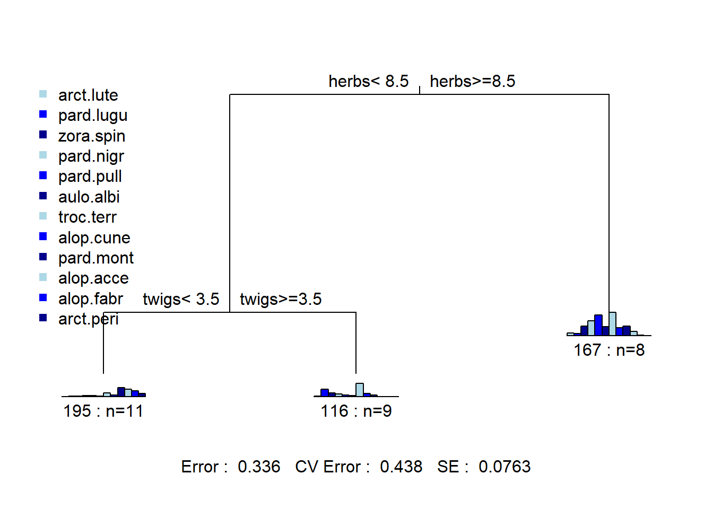

Capítulo 9 Análise multivariada
9.1 Cluster Analysis (Análise de Agrupamento)
Assista este conteúdo em Cap_8_Cluster Analysis no PVANet
Análise de cluster ou agrupamento, como o próprio nome sugere, é uma análise exploratória que consiste em buscar padrões ou estruturas que descrevam um banco de dados para que possam ser agrupados(separados) baseados em sua similaridade(dissimilaridade) ou distância.
A partir deste agrupamento realizado poderemos ter uma compreensão um pouco melhor dos nossos dados para então interpretá-los de maneira mais satisfatória.
É importante salientar que a análise cluster tal qual outras análises exploratórias não são testes estatísticos definitivos que te darão a resposta final sobre alguma coisa. Estes são métodos exploratórios de análise que contribuem com nossa compreensão facilitando nossas análises.
Contudo, para alcançar uma melhor compreensão dos dados temos que dar alguns passos importantes tomando decisões igualmente importantes como:
- Devemos padronizar nossos dados?
- Qual método de (dis)similaridade utilizar?
- Qual método de agrupamento utilizar?
- Quantos grupos reter?
Para compreender um pouco mais deixo logo no início esta seleção de trabalhos sobre cluster analysis que vale a pena ser estudada.
Um dos melhores guias para análise de cluster e multivariada em geral no R é o material Numerical Ecology with R, por isso vamos seguir os passos sugeridos pelos autores.
Em Daniel Borcard (2018) os autores listam alguns métodos de agrupamento que dependem das decisões acima mencioadas.
1 - Sequencial ou algoritmos simultâneos - Ocorre a repetição de procedimentos até que todos os objetos encontrem seus grupos.
2 - Aglomerativo ou Divisivo - Aglomerativos agrupa objetos incialmente separados enquando os Divisivos separam os objetos que inicialmente estão todos juntos.
3 - Monotético ou Politético - São procedimentos relacionados ao método divisivo que utiliza um único descritor (monotético), o melhor encontrado, para particionar os grupos enqquanto o politético utiliza todos os descritores.
4 - Hierárquico e não Hierárquico - No primeiro, o membros de um ranking inferior se tornam membros de um gruposd maior enquanto no segundo é produzido apenas uma única partição sem qualquer hierarquia.
5 - Probailístico e não Probabilístico - O probailístico baseia-se na definição dos grupos de maneira que dentro do grupo (entre seus objetos) tenham uma dada probabilidade de serem homogêneos.
6 - Restrito e não restrito - Não restrito baseia-se na existência de 2 matrizes sendo: 1 - que será agrupada e 2 - com variáveis exploratórias que guiarão o procedimento da matriz 1.
9.1.1 Primeiro Passo - Importando e analisando nossos dados
setwd("J:\\ENG 792\\ENG_792-AVDR\\ENG.792-AVDR")
library(vegan)
library(factoextra)
library(gclus)
camp.bras19<-read.csv("Brasileiro_2019_Completo.csv", sep=";",
header=T, row.names = 2)
library(magrittr)
urls<-c("www.ogol.com.br")
linkID<-c("O Gol")
camp.bras19 %>%
knitr::kable(caption = paste("Fonte: [",linkID,"](https://",urls,")"))| Posicao | P | V | E | D | GP | GC | SG | Aprov. | VC | EC | DC | VF | EF | DF | GPC | GCC | GPF | GCF | RVV | A | X2A | VE | VCS | ECS | DCS | JSSP | JSP | JSG | GS | GS.1.15 | GS.16.30 | GS.31.45 | GS.46.60 | GS.61.75 | GS.76.90 | GS.90 | GS.91.105 | GS.106.120 | GS.120 | G | GM.1.15 | GM.16.30 | GM.31.45 | GM.46.60 | GM.61.75 | GM.76.90 | GM.90 | GM.91.105 | GM.106.120 | GM.120 | PEN | PENF | PEND | Destino | |
|---|---|---|---|---|---|---|---|---|---|---|---|---|---|---|---|---|---|---|---|---|---|---|---|---|---|---|---|---|---|---|---|---|---|---|---|---|---|---|---|---|---|---|---|---|---|---|---|---|---|---|---|---|---|---|---|
| Flamengo | 1 | 90 | 28 | 6 | 4 | 86 | 37 | 49 | 78 | 17 | 2 | 0 | 11 | 4 | 4 | 56 | 18 | 30 | 19 | 6 | 90 | 2 | 1 | 8 | 1 | 1 | 24 | 0 | 1 | 37 | 4 | 5 | 8 | 6 | 6 | 5 | 3 | 0 | 0 | 0 | 86 | 11 | 3 | 23 | 13 | 16 | 15 | 5 | 0 | 0 | 0 | 6 | 2 | 2 | Libertadores |
| Santos | 2 | 74 | 22 | 8 | 8 | 60 | 33 | 27 | 64 | 14 | 4 | 1 | 8 | 4 | 7 | 44 | 15 | 16 | 18 | 2 | 108 | 6 | 4 | 7 | 1 | 2 | 8 | 1 | 0 | 33 | 3 | 4 | 6 | 9 | 4 | 3 | 4 | 0 | 0 | 0 | 60 | 13 | 6 | 11 | 10 | 11 | 8 | 1 | 0 | 0 | 0 | 5 | 2 | 1 | Libertadores |
| Palmeiras | 3 | 74 | 21 | 11 | 6 | 61 | 32 | 29 | 64 | 13 | 4 | 2 | 8 | 7 | 4 | 40 | 13 | 21 | 19 | 1 | 73 | 1 | 3 | 7 | 4 | 3 | 10 | 2 | 0 | 32 | 7 | 5 | 7 | 3 | 4 | 4 | 2 | 0 | 0 | 0 | 61 | 12 | 5 | 9 | 11 | 8 | 12 | 4 | 0 | 0 | 0 | 5 | 1 | 1 | Libertadores |
| Gremio | 4 | 65 | 19 | 8 | 11 | 64 | 39 | 25 | 57 | 12 | 3 | 4 | 7 | 5 | 7 | 38 | 18 | 26 | 21 | 2 | 81 | 1 | 1 | 5 | 3 | 2 | 7 | 0 | 1 | 39 | 8 | 3 | 12 | 6 | 3 | 4 | 3 | 0 | 0 | 0 | 64 | 10 | 6 | 14 | 7 | 11 | 11 | 5 | 0 | 0 | 0 | 7 | 2 | 0 | Libertadores |
| Athletico Paranaense | 5 | 64 | 18 | 10 | 10 | 51 | 32 | 19 | 56 | 12 | 3 | 4 | 6 | 7 | 6 | 26 | 11 | 25 | 21 | 3 | 82 | 1 | 0 | 4 | 1 | 2 | 13 | 13 | 1 | 32 | 8 | 2 | 8 | 1 | 1 | 9 | 3 | 0 | 0 | 0 | 51 | 3 | 6 | 10 | 10 | 8 | 9 | 5 | 0 | 0 | 0 | 3 | 1 | 2 | Libertadores |
| Sao Paulo | 6 | 63 | 17 | 12 | 9 | 39 | 30 | 9 | 55 | 10 | 6 | 3 | 7 | 6 | 6 | 23 | 12 | 16 | 18 | 1 | 86 | 2 | 4 | 5 | 4 | 2 | 9 | 2 | 0 | 30 | 4 | 1 | 10 | 6 | 4 | 4 | 1 | 0 | 0 | 0 | 39 | 7 | 3 | 7 | 10 | 3 | 6 | 3 | 0 | 0 | 0 | 3 | 1 | 0 | Libertadores |
| Internacional | 7 | 57 | 16 | 9 | 13 | 44 | 39 | 5 | 50 | 11 | 6 | 2 | 5 | 3 | 11 | 28 | 15 | 16 | 24 | 1 | 93 | 0 | 3 | 4 | 2 | 2 | 4 | 1 | 0 | 39 | 4 | 3 | 6 | 6 | 11 | 7 | 2 | 0 | 0 | 0 | 44 | 4 | 5 | 7 | 7 | 7 | 12 | 2 | 0 | 0 | 0 | 1 | 2 | 1 | Sulamericana |
| Corinthians | 8 | 56 | 14 | 14 | 10 | 42 | 34 | 8 | 49 | 11 | 2 | 6 | 4 | 6 | 9 | 25 | 13 | 17 | 21 | 2 | 69 | 0 | 1 | 3 | 2 | 2 | 10 | 0 | 1 | 34 | 1 | 5 | 10 | 6 | 6 | 4 | 2 | 0 | 0 | 0 | 42 | 4 | 6 | 8 | 6 | 7 | 8 | 3 | 0 | 0 | 0 | 0 | 0 | 0 | Sulamericana |
| Fortaleza | 9 | 53 | 15 | 8 | 15 | 50 | 49 | 1 | 46 | 11 | 3 | 5 | 4 | 4 | 11 | 26 | 17 | 24 | 32 | 2 | 86 | 5 | 1 | 2 | 1 | 2 | 7 | 7 | 0 | 49 | 10 | 4 | 8 | 4 | 11 | 10 | 2 | 0 | 0 | 0 | 50 | 9 | 5 | 11 | 8 | 10 | 6 | 1 | 0 | 0 | 0 | 8 | 1 | 1 | Sulamericana |
| Goias | 10 | 52 | 15 | 7 | 16 | 46 | 64 | -18 | 45 | 10 | 7 | 2 | 4 | 7 | 8 | 31 | 23 | 15 | 41 | 2 | 87 | 3 | 4 | 4 | 2 | 3 | 4 | 1 | 0 | 64 | 5 | 11 | 13 | 10 | 8 | 11 | 6 | 0 | 0 | 0 | 46 | 7 | 5 | 9 | 2 | 7 | 8 | 8 | 0 | 0 | 0 | 0 | 0 | 0 | Sulamericana |
| Bahia | 11 | 49 | 12 | 13 | 13 | 44 | 43 | 1 | 42 | 9 | 2 | 8 | 4 | 2 | 13 | 24 | 18 | 20 | 25 | 3 | 68 | 4 | 2 | 3 | 2 | 3 | 9 | 0 | 2 | 43 | 7 | 4 | 6 | 8 | 8 | 8 | 2 | 0 | 0 | 0 | 44 | 2 | 7 | 9 | 4 | 8 | 12 | 2 | 0 | 0 | 0 | 9 | 1 | 1 | Sulamericana |
| Vasco | 12 | 49 | 12 | 13 | 13 | 39 | 45 | -6 | 42 | 10 | 2 | 7 | 3 | 7 | 9 | 20 | 22 | 19 | 23 | 3 | 103 | 2 | 2 | 3 | 2 | 2 | 5 | 3 | 2 | 45 | 5 | 3 | 7 | 10 | 8 | 9 | 3 | 0 | 0 | 0 | 39 | 5 | 5 | 7 | 4 | 8 | 8 | 2 | 0 | 0 | 0 | 8 | 4 | 0 | Sulamericana |
| Atletico Mineiro | 13 | 48 | 13 | 9 | 16 | 45 | 49 | -4 | 42 | 7 | 8 | 4 | 5 | 5 | 9 | 28 | 23 | 17 | 26 | 1 | 73 | 3 | 2 | 3 | 2 | 6 | 6 | 0 | 1 | 49 | 3 | 7 | 11 | 8 | 9 | 8 | 3 | 0 | 0 | 0 | 45 | 4 | 7 | 7 | 10 | 4 | 8 | 5 | 0 | 0 | 0 | 5 | 2 | 1 | NA |
| Fluminense | 14 | 46 | 12 | 10 | 16 | 38 | 46 | -8 | 40 | 6 | 7 | 6 | 6 | 3 | 10 | 18 | 15 | 20 | 31 | 1 | 89 | 4 | 5 | 2 | 3 | 3 | 6 | 6 | 0 | 46 | 7 | 6 | 6 | 4 | 11 | 8 | 4 | 0 | 0 | 0 | 38 | 3 | 4 | 14 | 7 | 3 | 5 | 2 | 0 | 0 | 0 | 4 | 1 | 0 | NA |
| Botafogo | 15 | 43 | 13 | 4 | 21 | 31 | 45 | -14 | 37 | 7 | 6 | 6 | 5 | 7 | 7 | 19 | 17 | 12 | 28 | 2 | 95 | 2 | 1 | 3 | 1 | 4 | 3 | 1 | 3 | 45 | 6 | 4 | 7 | 4 | 12 | 9 | 3 | 0 | 0 | 0 | 31 | 2 | 6 | 7 | 3 | 7 | 4 | 2 | 0 | 0 | 0 | 0 | 0 | 0 | NA |
| Ceara | 16 | 39 | 10 | 9 | 19 | 36 | 41 | -5 | 34 | 8 | 6 | 5 | 2 | 3 | 14 | 23 | 14 | 13 | 27 | 2 | 86 | 1 | 1 | 2 | 2 | 3 | 3 | 1 | 7 | 41 | 1 | 7 | 13 | 4 | 3 | 8 | 5 | 0 | 0 | 0 | 36 | 3 | 6 | 7 | 2 | 4 | 10 | 4 | 0 | 0 | 0 | 3 | 3 | 0 | NA |
| Cruzeiro | 17 | 36 | 7 | 15 | 16 | 27 | 46 | -19 | 31 | 6 | 5 | 8 | 2 | 3 | 14 | 13 | 17 | 14 | 29 | 0 | 89 | 5 | 1 | 2 | 4 | 5 | 11 | 0 | 9 | 46 | 5 | 5 | 8 | 6 | 8 | 10 | 4 | 0 | 0 | 0 | 27 | 4 | 1 | 6 | 6 | 5 | 3 | 2 | 0 | 0 | 0 | 4 | 1 | 2 | Rebaixamento |
| CSA | 18 | 32 | 8 | 8 | 22 | 24 | 58 | -34 | 28 | 5 | 8 | 6 | 2 | 7 | 10 | 17 | 24 | 7 | 34 | 1 | 95 | 3 | 1 | 2 | 3 | 5 | 3 | 0 | 3 | 58 | 10 | 6 | 10 | 8 | 6 | 15 | 3 | 0 | 0 | 0 | 24 | 1 | 1 | 4 | 3 | 7 | 5 | 3 | 0 | 0 | 0 | 0 | 0 | 0 | Rebaixamento |
| Chapecoense | 19 | 32 | 7 | 11 | 20 | 31 | 52 | -21 | 28 | 4 | 5 | 10 | 3 | 6 | 10 | 16 | 22 | 15 | 30 | 0 | 79 | 1 | 4 | 2 | 2 | 4 | 3 | 2 | 1 | 52 | 6 | 2 | 9 | 14 | 5 | 11 | 5 | 0 | 0 | 0 | 31 | 7 | 3 | 5 | 4 | 2 | 7 | 3 | 0 | 0 | 0 | 0 | 0 | 0 | Rebaixamento |
| Avai | 20 | 20 | 3 | 11 | 24 | 18 | 62 | -44 | 17 | 1 | 9 | 9 | 2 | 2 | 15 | 10 | 24 | 8 | 38 | 0 | 78 | 2 | 8 | 2 | 2 | 8 | 2 | 1 | 18 | 62 | 8 | 7 | 12 | 8 | 9 | 14 | 4 | 0 | 0 | 0 | 18 | 1 | 4 | 2 | 4 | 1 | 4 | 2 | 0 | 0 | 0 | 4 | 1 | 0 | Rebaixamento |
P = Pontos;V = Vitórias; E = Empates; D = Derrotas; GP = Gols Pró; GC = Gols Sofridos; AG = Gols Contra; SG = Saldo de Gols; GTIT = Gols como Titular; GSUP = Gols como Reserva; V3 = Vitórias por 3 ou mais Gols; VC = Vitórias em casa; EC = Empates em casa; DC = Derrotas em casa; VF = Vitórias Fora; EF = Empates Fora; DF = Derrotas Fora; MPG = Min. para marcar 1 gol; GPC = Gols Pró em Casa; GCC = Gols Sofridos Fora; GPF = Gols Pró Fora; GCF = Gols Sofridos Fora; RVV = Viradas; A = Amarelos; X2A = Segundos Amarelos; VE = Vermelhos; VCS = Máx. Vitórias Consecutivas; ECS = Máx. Empates Consecutivos; DCS = Máx Derrotas Consecutivas; JSSP = Máx. Jogos seguidos sem Perder; JSP = Jogos sem Perder; JSG = Jogos sem Ganhar; GS = Gols Sofridos; GS.1.15 = GS min 1 a 15; GS.16.30 = GS min 16 a 30; GS.31.45 = GS min 31 a 45; GS.46.60 = GS min 46 a 60; GS.61.75 = GS min 61 a 75; GS.76.90 = GS min 76 a 90; GS.90 = GS min 90+; GP.1.15 = GP min 1 a 15; GP.16.30 = GP min 16 a 30; GP.31.45 = GP min 31 a 45; GP.46.60 = GP min 46 a 60; GP.61.75 = GP min 61 a 75; GP.76.90 = GP min 76 a 90; GP.90 = GP min 90+; PEN = Gols de Pênalti; PENF = Pênaltis Falhados; PEND = Pênaltis Defendidos
Ao analisar a tabela do Campeonato Brasileiro de 2019 identificamos algumas demandas antes de iniciarmos nossa análise. Inicialmente, deveremos fazer um tipo de “balanceamento” das informações, isto porque temos “variáveis” com valores muito altos e outras muito baixas (ex. Pontos e Saldo de Gols), além de escalas de grandeza diferentes (ex. Aproveitamento que está em %).
O próximo passo é saber se devemos normalizar nossos dados. Quando mencionamos “normalizar” estamos nos referindo a transformar nossos dados de modo que ele fiquem dentro de uma mesma escala de grandeza. Este passo é importante para balancear os pesos das variáveis , pois valores altos ou baixos demais podem influenciar na confecção de nossas análises. Desta forma, o objetivo principal das transformações é obter uma distribuição simétrica, que é a ideal, pois os valores estão igualmente distribuídos em torno da tendência central dos dados Yamamoto (2020).
Quando não fazemos esse “balanceamento” estamos correndo o risco de ter resultados fortemente influenciados pelos valores mais altos reduzindo desproporcionalmente a importância de outras de valores baixos que podem ser fundamentais para descrever o comportamento dos dados.
O método mais comum utilizado para standatizar nossos dados consiste em transformar nossa média em 0 (zero) e variar o desvio padrão em torno desta média.
A transformação mais comum que observamos é a padronização por meio do cálculo do resíduo que transforma nossos dados em novos dados com média 0 e desvio padrão igual a 1. No R utilize a função scale().
\(z_{score} = \frac{x_{i}-\bar{x}}{\sigma_{x}}\)
No R esta transformação é feita com comando scale().
Vamos então “estandartizar” nossos dados para trazê-los todos para mesmo formato, espectro de variação, todos serão transformados em z score.
Não confunda estandartizar com normalizar.
Podemos também fazer a transformação logarítmica que tem po objetivo a obtenção de uma distribuição normal. No R utilize a função log().
\(y=ln(x)\)
Transformada Gaussiana gera sempre um histograma normal com média zero e desvio padrão igual a um, qualquer que seja o histograma dos dados originais.
\(P(Y(u)\le{y})=G(y)\) G é a distribuição acumulada Gaussiana.
Transformação de Hellinger é útil para abundância de espécies atribuindo valores baixos para espécies com contagens baixas e muitos zeros. Esta consiste baiscamente em calcular a raiz quadrada da divisão de cada valor da matriz de dados pela soma de sua respectiva linha. Diferentes pacotes no R fazem essa transformação.
\(y^{\prime}_{ij} = \sqrt{\frac{y_{ij}}{y_{i.}}}\)
Uma outra transformação baste utilizada é a aplicação da raiz quadrada. Reduz a amplitude dos dados comprimindo os valores grandes em menores. Útil para transformações de variáveis com proporção pequena de grandes valores se destacando da distribuição geral. No R utiliza-se sqrt().
destino<-camp.bras19[,55]
camp.bras19.stan<-scale(camp.bras19[,2:54])
library(magrittr)
camp.bras19.stan %>%
knitr::kable()| P | V | E | D | GP | GC | SG | Aprov. | VC | EC | DC | VF | EF | DF | GPC | GCC | GPF | GCF | RVV | A | X2A | VE | VCS | ECS | DCS | JSSP | JSP | JSG | GS | GS.1.15 | GS.16.30 | GS.31.45 | GS.46.60 | GS.61.75 | GS.76.90 | GS.90 | GS.91.105 | GS.106.120 | GS.120 | G | GM.1.15 | GM.16.30 | GM.31.45 | GM.46.60 | GM.61.75 | GM.76.90 | GM.90 | GM.91.105 | GM.106.120 | GM.120 | PEN | PENF | PEND | |
|---|---|---|---|---|---|---|---|---|---|---|---|---|---|---|---|---|---|---|---|---|---|---|---|---|---|---|---|---|---|---|---|---|---|---|---|---|---|---|---|---|---|---|---|---|---|---|---|---|---|---|---|---|---|
| Flamengo | 2.2718440 | 2.3768498 | -1.3746024 | -1.860723 | 2.6960012 | -0.6877908 | 2.1704285 | 2.2538301 | 2.0722105 | -1.2914930 | -1.7936379 | 2.5146974 | -0.4911441 | -1.6307094 | 2.6616214 | 0.1078222 | 2.1502724 | -1.0918365 | 3.0983303 | 0.4261121 | -0.2355302 | -0.7503581 | 2.3242992 | -1.1937336 | -1.2907138 | 3.3176256 | -0.6367261 | -0.3441236 | -0.6877908 | -0.6193514 | 0.1319600 | -0.3556156 | -0.1866652 | -0.2712677 | -0.9110408 | -0.1613301 | NaN | NaN | NaN | 2.6960012 | 1.4575275 | -0.9713242 | 3.1700902 | 1.9638692 | 2.5715514 | 2.1697015 | 1.037412 | NaN | NaN | NaN | 0.7664232 | 0.7009845 | 1.8569190 |
| Santos | 1.3127542 | 1.3508715 | -0.6511274 | -1.123803 | 1.0349578 | -1.0923737 | 1.1959504 | 1.2903607 | 1.2752065 | -0.4008082 | -1.4275893 | 1.2779610 | -0.4911441 | -0.6899155 | 1.5880262 | -0.6109924 | -0.2677046 | -1.2424346 | 0.1822547 | 2.1305603 | 2.1197714 | 0.8021070 | 1.7899775 | -1.1937336 | -0.7040257 | 0.1295169 | -0.3261280 | -0.5735393 | -1.0923737 | -1.0064461 | -0.3079067 | -1.1923582 | 0.8315086 | -0.9095447 | -1.5084446 | 0.6453204 | NaN | NaN | NaN | 1.0349578 | 1.9973525 | 0.7427774 | 0.4816745 | 1.0504417 | 1.1663321 | -0.0156094 | -1.267948 | NaN | NaN | NaN | 0.4257907 | 0.7009845 | 0.5305483 |
| Palmeiras | 1.3127542 | 1.1798751 | 0.4340850 | -1.492263 | 1.0988441 | -1.1935194 | 1.2845393 | 1.2903607 | 1.0095385 | -0.4008082 | -1.0615408 | 1.2779610 | 1.1460030 | -1.6307094 | 1.2301612 | -1.0902021 | 0.5958586 | -1.0918365 | -0.5467642 | -1.1836446 | -0.8243555 | 0.2846186 | 1.7899775 | 1.7906005 | -0.1173376 | 0.5280305 | -0.0155299 | -0.5735393 | -1.1935194 | 0.5419325 | 0.1319600 | -0.7739869 | -1.2048389 | -0.9095447 | -1.2097427 | -0.9679805 | NaN | NaN | NaN | 1.0988441 | 1.7274400 | 0.1714102 | 0.0336052 | 1.3549175 | 0.3232005 | 1.2331397 | 0.461072 | NaN | NaN | NaN | 0.4257907 | -0.2336615 | 0.5305483 |
| Gremio | 0.7732662 | 0.8378823 | -0.6511274 | -0.571113 | 1.2905029 | -0.4854994 | 1.1073615 | 0.8086261 | 0.7438704 | -0.8461506 | -0.3294437 | 0.8657155 | 0.0545716 | -0.6899155 | 1.0512286 | 0.1078222 | 1.4594218 | -0.7906402 | 0.1822547 | -0.4261121 | -0.8243555 | -0.7503581 | 0.7213342 | 0.7958224 | -0.7040257 | -0.0697399 | -0.6367261 | -0.3441236 | -0.4854994 | 0.9290272 | -0.7477733 | 1.3178696 | -0.1866652 | -1.2286832 | -1.2097427 | -0.1613301 | NaN | NaN | NaN | 1.2905029 | 1.1876150 | 0.7427774 | 1.1537784 | 0.1370141 | 1.1663321 | 0.9209524 | 1.037412 | NaN | NaN | NaN | 1.1070558 | 0.7009845 | -0.7958224 |
| Athletico Paranaense | 0.7133230 | 0.6668859 | 0.0723475 | -0.755343 | 0.4599812 | -1.1935194 | 0.8415947 | 0.7398068 | 0.7438704 | -0.8461506 | -0.3294437 | 0.4534700 | 1.1460030 | -1.0035135 | -0.0223666 | -1.5694118 | 1.2867092 | -0.7906402 | 0.9112736 | -0.3314205 | -0.8243555 | -1.2678465 | 0.1870126 | -1.1937336 | -0.7040257 | 1.1258009 | 3.4010493 | -0.3441236 | -1.1935194 | 0.9290272 | -1.1876400 | -0.3556156 | -1.8836214 | -1.8669601 | 0.2837668 | -0.1613301 | NaN | NaN | NaN | 0.4599812 | -0.7017725 | 0.7427774 | 0.2576398 | 1.0504417 | 0.3232005 | 0.2965779 | 1.037412 | NaN | NaN | NaN | -0.2554744 | -0.2336615 | 1.8569190 |
| Sao Paulo | 0.6533799 | 0.4958895 | 0.7958224 | -0.939573 | -0.3066542 | -1.3958108 | 0.3986501 | 0.6709876 | 0.2125344 | 0.4898766 | -0.6954922 | 0.8657155 | 0.6002873 | -1.0035135 | -0.2907654 | -1.3298069 | -0.2677046 | -1.2424346 | -0.5467642 | 0.0473458 | -0.2355302 | 0.8021070 | 0.7213342 | 1.7906005 | -0.7040257 | 0.3287737 | -0.0155299 | -0.5735393 | -1.3958108 | -0.6193514 | -1.6275067 | 0.4811270 | -0.1866652 | -0.9095447 | -1.2097427 | -1.7746310 | NaN | NaN | NaN | -0.3066542 | 0.3778775 | -0.9713242 | -0.4144641 | 1.0504417 | -1.0820189 | -0.6399839 | -0.115268 | NaN | NaN | NaN | -0.2554744 | -0.2336615 | -0.7958224 |
| Internacional | 0.2937213 | 0.3248931 | -0.2893900 | -0.202653 | 0.0127773 | -0.4854994 | 0.2214723 | 0.3268914 | 0.4782024 | 0.4898766 | -1.0615408 | 0.0412245 | -1.0368599 | 0.5644763 | 0.1565660 | -0.6109924 | -0.2677046 | -0.3388458 | -0.5467642 | 0.7101868 | -1.4131809 | 0.2846186 | 0.1870126 | -0.1989556 | -0.7040257 | -0.6675103 | -0.3261280 | -0.5735393 | -0.4854994 | -0.6193514 | -0.7477733 | -1.1923582 | -0.1866652 | 1.3244247 | -0.3136370 | -0.9679805 | NaN | NaN | NaN | 0.0127773 | -0.4318600 | 0.1714102 | -0.4144641 | 0.1370141 | 0.0421566 | 1.2331397 | -0.691608 | NaN | NaN | NaN | -0.9367395 | 0.7009845 | 0.5305483 |
| Corinthians | 0.2337781 | -0.0170996 | 1.5192974 | -0.755343 | -0.1149953 | -0.9912279 | 0.3543557 | 0.2580721 | 0.4782024 | -1.2914930 | 0.4026534 | -0.3710209 | 0.6002873 | -0.0627196 | -0.1118328 | -1.0902021 | -0.0949920 | -0.7906402 | 0.1822547 | -1.5624109 | -1.4131809 | -0.7503581 | -0.3473091 | -0.1989556 | -0.7040257 | 0.5280305 | -0.6367261 | -0.3441236 | -0.9912279 | -1.7806354 | 0.1319600 | 0.4811270 | -0.1866652 | -0.2712677 | -1.2097427 | -0.9679805 | NaN | NaN | NaN | -0.1149953 | -0.4318600 | 0.7427774 | -0.1904294 | -0.1674617 | 0.0421566 | -0.0156094 | -0.115268 | NaN | NaN | NaN | -1.2773721 | -1.1683075 | -0.7958224 |
| Fortaleza | 0.0539488 | 0.1538968 | -0.6511274 | 0.165807 | 0.3960950 | 0.5259577 | 0.0442945 | 0.0516144 | 0.4782024 | -0.8461506 | 0.0366049 | -0.3710209 | -0.4911441 | 0.5644763 | -0.0223666 | -0.1317827 | 1.1139965 | 0.8659393 | 0.1822547 | 0.0473458 | 1.5309460 | -0.7503581 | -0.8816307 | -1.1937336 | -0.7040257 | -0.0697399 | 1.5374606 | -0.5735393 | 0.5259577 | 1.7032165 | -0.3079067 | -0.3556156 | -0.8654477 | 1.3244247 | 0.5824687 | -0.9679805 | NaN | NaN | NaN | 0.3960950 | 0.9177025 | 0.1714102 | 0.4816745 | 0.4414900 | 0.8852882 | -0.6399839 | -1.267948 | NaN | NaN | NaN | 1.4476883 | -0.2336615 | 0.5305483 |
| Goias | -0.0059943 | 0.1538968 | -1.0128649 | 0.350037 | 0.1405498 | 2.0431433 | -0.7973003 | -0.0172048 | 0.2125344 | 0.9352190 | -1.0615408 | -0.3710209 | 1.1460030 | -0.3763176 | 0.4249648 | 1.3058464 | -0.4404172 | 2.2213224 | 0.1822547 | 0.1420374 | 0.3532952 | 0.8021070 | 0.1870126 | -0.1989556 | -0.1173376 | -0.6675103 | -0.3261280 | -0.5735393 | 2.0431433 | -0.2322568 | 2.7711600 | 1.7362409 | 1.1708998 | 0.3670093 | 0.8811706 | 2.2586212 | NaN | NaN | NaN | 0.1405498 | 0.3778775 | 0.1714102 | 0.0336052 | -1.3853651 | 0.0421566 | -0.0156094 | 2.766432 | NaN | NaN | NaN | -1.2773721 | -1.1683075 | -0.7958224 |
| Bahia | -0.1858236 | -0.3590924 | 1.1575599 | -0.202653 | 0.0127773 | -0.0809166 | 0.0442945 | -0.2236625 | -0.0531336 | -1.2914930 | 1.1347505 | -0.3710209 | -1.5825756 | 1.1916723 | -0.2012991 | 0.1078222 | 0.4231460 | -0.1882477 | 0.9112736 | -1.6571025 | 0.9421206 | -0.2328698 | -0.3473091 | -0.1989556 | -0.1173376 | 0.3287737 | -0.6367261 | -0.1147079 | -0.0809166 | 0.5419325 | -0.3079067 | -1.1923582 | 0.4921173 | 0.3670093 | -0.0149351 | -0.9679805 | NaN | NaN | NaN | 0.0127773 | -0.9716850 | 1.3141446 | 0.0336052 | -0.7764134 | 0.3232005 | 1.2331397 | -0.691608 | NaN | NaN | NaN | 1.7883209 | -0.2336615 | 0.5305483 |
| Vasco | -0.1858236 | -0.3590924 | 1.1575599 | -0.202653 | -0.3066542 | 0.1213749 | -0.2657668 | -0.2236625 | 0.2125344 | -1.2914930 | 0.7687019 | -0.7832664 | 1.1460030 | -0.0627196 | -0.5591642 | 1.0662416 | 0.2504333 | -0.4894439 | 0.9112736 | 1.6571025 | -0.2355302 | -0.2328698 | -0.3473091 | -0.1989556 | -0.7040257 | -0.4682535 | 0.2950682 | -0.1147079 | 0.1213749 | -0.2322568 | -0.7477733 | -0.7739869 | 1.1708998 | 0.3670093 | 0.2837668 | -0.1613301 | NaN | NaN | NaN | -0.3066542 | -0.1619475 | 0.1714102 | -0.4144641 | -0.7764134 | 0.3232005 | -0.0156094 | -0.691608 | NaN | NaN | NaN | 1.4476883 | 2.5702766 | -0.7958224 |
| Atletico Mineiro | -0.2457668 | -0.1880960 | -0.2893900 | 0.350037 | 0.0766635 | 0.5259577 | -0.1771778 | -0.2236625 | -0.5844696 | 1.3805614 | -0.3294437 | 0.0412245 | 0.0545716 | -0.0627196 | 0.1565660 | 1.3058464 | -0.0949920 | -0.0376495 | -0.5467642 | -1.1836446 | 0.3532952 | -0.2328698 | -0.3473091 | -0.1989556 | 1.6427266 | -0.2689967 | -0.6367261 | -0.3441236 | 0.5259577 | -1.0064461 | 1.0116933 | 0.8994983 | 0.4921173 | 0.6861477 | -0.0149351 | -0.1613301 | NaN | NaN | NaN | 0.0766635 | -0.4318600 | 1.3141446 | -0.4144641 | 1.0504417 | -0.8009750 | -0.0156094 | 1.037412 | NaN | NaN | NaN | 0.4257907 | 0.7009845 | 0.5305483 |
| Fluminense | -0.3656530 | -0.3590924 | 0.0723475 | 0.350037 | -0.3705404 | 0.2225206 | -0.3543557 | -0.3613010 | -0.8501377 | 0.9352190 | 0.4026534 | 0.4534700 | -1.0368599 | 0.2508784 | -0.7380967 | -0.6109924 | 0.4231460 | 0.7153411 | -0.5467642 | 0.3314205 | 0.9421206 | 1.3195954 | -0.8816307 | 0.7958224 | -0.1173376 | -0.2689967 | 1.2268625 | -0.5735393 | 0.2225206 | 0.5419325 | 0.5718267 | -1.1923582 | -0.8654477 | 1.3244247 | -0.0149351 | 0.6453204 | NaN | NaN | NaN | -0.3705404 | -0.7017725 | -0.3999570 | 1.1537784 | 0.1370141 | -1.0820189 | -0.9521712 | -0.691608 | NaN | NaN | NaN | 0.0851581 | -0.2336615 | -0.7958224 |
| Botafogo | -0.5454823 | -0.1880960 | -2.0980773 | 1.271187 | -0.8177444 | 0.1213749 | -0.6201224 | -0.5677587 | -0.5844696 | 0.4898766 | 0.4026534 | 0.0412245 | 1.1460030 | -0.6899155 | -0.6486304 | -0.1317827 | -0.9585552 | 0.2635467 | 0.1822547 | 0.8995699 | -0.2355302 | -0.7503581 | -0.3473091 | -1.1937336 | 0.4693505 | -0.8667671 | -0.3261280 | 0.1147079 | 0.1213749 | 0.1548379 | -0.3079067 | -0.7739869 | -0.8654477 | 1.6435632 | 0.2837668 | -0.1613301 | NaN | NaN | NaN | -0.8177444 | -0.9716850 | 0.7427774 | -0.4144641 | -1.0808892 | 0.0421566 | -1.2643584 | -0.691608 | NaN | NaN | NaN | -1.2773721 | -1.1683075 | -0.7958224 |
| Ceara | -0.7852548 | -0.7010852 | -0.2893900 | 0.902727 | -0.4983130 | -0.2832080 | -0.2214723 | -0.7742164 | -0.3188016 | 0.4898766 | 0.0366049 | -1.1955119 | -1.0368599 | 1.5052702 | -0.2907654 | -0.8505972 | -0.7858425 | 0.1129486 | 0.1822547 | 0.0473458 | -0.8243555 | -0.7503581 | -0.8816307 | -0.1989556 | -0.1173376 | -0.8667671 | -0.3261280 | 1.0323708 | -0.2832080 | -1.7806354 | 1.0116933 | 1.7362409 | -0.8654477 | -1.2286832 | -0.0149351 | 1.4519708 | NaN | NaN | NaN | -0.4983130 | -0.7017725 | 0.7427774 | -0.4144641 | -1.3853651 | -0.8009750 | 0.6087652 | 0.461072 | NaN | NaN | NaN | -0.2554744 | 1.6356306 | -0.7958224 |
| Cruzeiro | -0.9650841 | -1.2140744 | 1.8810348 | 0.350037 | -1.0732896 | 0.2225206 | -0.8415947 | -0.9806742 | -0.8501377 | 0.0445342 | 1.1347505 | -1.1955119 | -1.0368599 | 1.5052702 | -1.1854280 | -0.1317827 | -0.6131299 | 0.4141449 | -1.2757830 | 0.3314205 | 1.5309460 | -0.7503581 | -0.8816307 | 1.7906005 | 1.0560385 | 0.7272873 | -0.6367261 | 1.4912023 | 0.2225206 | -0.2322568 | 0.1319600 | -0.3556156 | -0.1866652 | 0.3670093 | 0.5824687 | 0.6453204 | NaN | NaN | NaN | -1.0732896 | -0.4318600 | -2.1140587 | -0.6384987 | -0.1674617 | -0.5199312 | -1.5765457 | -0.691608 | NaN | NaN | NaN | 0.0851581 | -0.2336615 | 1.8569190 |
| CSA | -1.2048566 | -1.0430780 | -0.6511274 | 1.455417 | -1.2649484 | 1.4362691 | -1.5060116 | -1.1871319 | -1.1158057 | 1.3805614 | 0.4026534 | -1.1955119 | 1.1460030 | 0.2508784 | -0.8275630 | 1.5454513 | -1.8221184 | 1.1671355 | -0.5467642 | 0.8995699 | 0.3532952 | -0.7503581 | -0.8816307 | 0.7958224 | 1.0560385 | -0.8667671 | -0.6367261 | 0.1147079 | 1.4362691 | 1.7032165 | 0.5718267 | 0.4811270 | 0.4921173 | -0.2712677 | 2.0759782 | -0.1613301 | NaN | NaN | NaN | -1.2649484 | -1.2415975 | -2.1140587 | -1.0865680 | -1.0808892 | 0.0421566 | -0.9521712 | -0.115268 | NaN | NaN | NaN | -1.2773721 | -1.1683075 | -0.7958224 |
| Chapecoense | -1.2048566 | -1.2140744 | 0.4340850 | 1.086957 | -0.8177444 | 0.8293948 | -0.9301837 | -1.1871319 | -1.3814737 | 0.0445342 | 1.8668476 | -0.7832664 | 0.6002873 | 0.2508784 | -0.9170292 | 1.0662416 | -0.4404172 | 0.5647430 | -1.2757830 | -0.6154952 | -0.8243555 | 0.8021070 | -0.8816307 | -0.1989556 | 0.4693505 | -0.8667671 | -0.0155299 | -0.3441236 | 0.8293948 | 0.1548379 | -1.1876400 | 0.0627557 | 2.5284648 | -0.5904062 | 0.8811706 | 1.4519708 | NaN | NaN | NaN | -0.8177444 | 0.3778775 | -0.9713242 | -0.8625334 | -0.7764134 | -1.3630628 | -0.3277966 | -0.115268 | NaN | NaN | NaN | -1.2773721 | -1.1683075 | -0.7958224 |
| Avai | -1.9241739 | -1.8980600 | 0.4340850 | 1.823877 | -1.6482661 | 1.8408519 | -1.9489562 | -1.9441435 | -2.1784777 | 1.8259038 | 1.5007990 | -1.1955119 | -1.5825756 | 1.8188682 | -1.4538268 | 1.5454513 | -1.6494057 | 1.7695280 | -1.2757830 | -0.7101868 | -0.2355302 | 2.8720605 | -0.8816307 | -0.1989556 | 2.8161028 | -1.0660239 | -0.3261280 | 3.5559439 | 1.8408519 | 0.9290272 | 1.0116933 | 1.3178696 | 0.4921173 | 0.6861477 | 1.7772763 | 0.6453204 | NaN | NaN | NaN | -1.6482661 | -1.2415975 | -0.3999570 | -1.5346373 | -0.7764134 | -1.6441066 | -1.2643584 | -0.691608 | NaN | NaN | NaN | 0.0851581 | -0.2336615 | -0.7958224 |
Vamos remover as colunas com NAN.
camp.bras19.stan<-camp.bras19.stan[ , -which(colnames(camp.bras19.stan) %in% c("GS.91.105","GS.106.120","GS.120","GM.91.105","GM.106.120","GM.120"))]
# Devem haver outras formas de fazer
camp.bras19.stan %>%
knitr::kable()| P | V | E | D | GP | GC | SG | Aprov. | VC | EC | DC | VF | EF | DF | GPC | GCC | GPF | GCF | RVV | A | X2A | VE | VCS | ECS | DCS | JSSP | JSP | JSG | GS | GS.1.15 | GS.16.30 | GS.31.45 | GS.46.60 | GS.61.75 | GS.76.90 | GS.90 | G | GM.1.15 | GM.16.30 | GM.31.45 | GM.46.60 | GM.61.75 | GM.76.90 | GM.90 | PEN | PENF | PEND | |
|---|---|---|---|---|---|---|---|---|---|---|---|---|---|---|---|---|---|---|---|---|---|---|---|---|---|---|---|---|---|---|---|---|---|---|---|---|---|---|---|---|---|---|---|---|---|---|---|
| Flamengo | 2.2718440 | 2.3768498 | -1.3746024 | -1.860723 | 2.6960012 | -0.6877908 | 2.1704285 | 2.2538301 | 2.0722105 | -1.2914930 | -1.7936379 | 2.5146974 | -0.4911441 | -1.6307094 | 2.6616214 | 0.1078222 | 2.1502724 | -1.0918365 | 3.0983303 | 0.4261121 | -0.2355302 | -0.7503581 | 2.3242992 | -1.1937336 | -1.2907138 | 3.3176256 | -0.6367261 | -0.3441236 | -0.6877908 | -0.6193514 | 0.1319600 | -0.3556156 | -0.1866652 | -0.2712677 | -0.9110408 | -0.1613301 | 2.6960012 | 1.4575275 | -0.9713242 | 3.1700902 | 1.9638692 | 2.5715514 | 2.1697015 | 1.037412 | 0.7664232 | 0.7009845 | 1.8569190 |
| Santos | 1.3127542 | 1.3508715 | -0.6511274 | -1.123803 | 1.0349578 | -1.0923737 | 1.1959504 | 1.2903607 | 1.2752065 | -0.4008082 | -1.4275893 | 1.2779610 | -0.4911441 | -0.6899155 | 1.5880262 | -0.6109924 | -0.2677046 | -1.2424346 | 0.1822547 | 2.1305603 | 2.1197714 | 0.8021070 | 1.7899775 | -1.1937336 | -0.7040257 | 0.1295169 | -0.3261280 | -0.5735393 | -1.0923737 | -1.0064461 | -0.3079067 | -1.1923582 | 0.8315086 | -0.9095447 | -1.5084446 | 0.6453204 | 1.0349578 | 1.9973525 | 0.7427774 | 0.4816745 | 1.0504417 | 1.1663321 | -0.0156094 | -1.267948 | 0.4257907 | 0.7009845 | 0.5305483 |
| Palmeiras | 1.3127542 | 1.1798751 | 0.4340850 | -1.492263 | 1.0988441 | -1.1935194 | 1.2845393 | 1.2903607 | 1.0095385 | -0.4008082 | -1.0615408 | 1.2779610 | 1.1460030 | -1.6307094 | 1.2301612 | -1.0902021 | 0.5958586 | -1.0918365 | -0.5467642 | -1.1836446 | -0.8243555 | 0.2846186 | 1.7899775 | 1.7906005 | -0.1173376 | 0.5280305 | -0.0155299 | -0.5735393 | -1.1935194 | 0.5419325 | 0.1319600 | -0.7739869 | -1.2048389 | -0.9095447 | -1.2097427 | -0.9679805 | 1.0988441 | 1.7274400 | 0.1714102 | 0.0336052 | 1.3549175 | 0.3232005 | 1.2331397 | 0.461072 | 0.4257907 | -0.2336615 | 0.5305483 |
| Gremio | 0.7732662 | 0.8378823 | -0.6511274 | -0.571113 | 1.2905029 | -0.4854994 | 1.1073615 | 0.8086261 | 0.7438704 | -0.8461506 | -0.3294437 | 0.8657155 | 0.0545716 | -0.6899155 | 1.0512286 | 0.1078222 | 1.4594218 | -0.7906402 | 0.1822547 | -0.4261121 | -0.8243555 | -0.7503581 | 0.7213342 | 0.7958224 | -0.7040257 | -0.0697399 | -0.6367261 | -0.3441236 | -0.4854994 | 0.9290272 | -0.7477733 | 1.3178696 | -0.1866652 | -1.2286832 | -1.2097427 | -0.1613301 | 1.2905029 | 1.1876150 | 0.7427774 | 1.1537784 | 0.1370141 | 1.1663321 | 0.9209524 | 1.037412 | 1.1070558 | 0.7009845 | -0.7958224 |
| Athletico Paranaense | 0.7133230 | 0.6668859 | 0.0723475 | -0.755343 | 0.4599812 | -1.1935194 | 0.8415947 | 0.7398068 | 0.7438704 | -0.8461506 | -0.3294437 | 0.4534700 | 1.1460030 | -1.0035135 | -0.0223666 | -1.5694118 | 1.2867092 | -0.7906402 | 0.9112736 | -0.3314205 | -0.8243555 | -1.2678465 | 0.1870126 | -1.1937336 | -0.7040257 | 1.1258009 | 3.4010493 | -0.3441236 | -1.1935194 | 0.9290272 | -1.1876400 | -0.3556156 | -1.8836214 | -1.8669601 | 0.2837668 | -0.1613301 | 0.4599812 | -0.7017725 | 0.7427774 | 0.2576398 | 1.0504417 | 0.3232005 | 0.2965779 | 1.037412 | -0.2554744 | -0.2336615 | 1.8569190 |
| Sao Paulo | 0.6533799 | 0.4958895 | 0.7958224 | -0.939573 | -0.3066542 | -1.3958108 | 0.3986501 | 0.6709876 | 0.2125344 | 0.4898766 | -0.6954922 | 0.8657155 | 0.6002873 | -1.0035135 | -0.2907654 | -1.3298069 | -0.2677046 | -1.2424346 | -0.5467642 | 0.0473458 | -0.2355302 | 0.8021070 | 0.7213342 | 1.7906005 | -0.7040257 | 0.3287737 | -0.0155299 | -0.5735393 | -1.3958108 | -0.6193514 | -1.6275067 | 0.4811270 | -0.1866652 | -0.9095447 | -1.2097427 | -1.7746310 | -0.3066542 | 0.3778775 | -0.9713242 | -0.4144641 | 1.0504417 | -1.0820189 | -0.6399839 | -0.115268 | -0.2554744 | -0.2336615 | -0.7958224 |
| Internacional | 0.2937213 | 0.3248931 | -0.2893900 | -0.202653 | 0.0127773 | -0.4854994 | 0.2214723 | 0.3268914 | 0.4782024 | 0.4898766 | -1.0615408 | 0.0412245 | -1.0368599 | 0.5644763 | 0.1565660 | -0.6109924 | -0.2677046 | -0.3388458 | -0.5467642 | 0.7101868 | -1.4131809 | 0.2846186 | 0.1870126 | -0.1989556 | -0.7040257 | -0.6675103 | -0.3261280 | -0.5735393 | -0.4854994 | -0.6193514 | -0.7477733 | -1.1923582 | -0.1866652 | 1.3244247 | -0.3136370 | -0.9679805 | 0.0127773 | -0.4318600 | 0.1714102 | -0.4144641 | 0.1370141 | 0.0421566 | 1.2331397 | -0.691608 | -0.9367395 | 0.7009845 | 0.5305483 |
| Corinthians | 0.2337781 | -0.0170996 | 1.5192974 | -0.755343 | -0.1149953 | -0.9912279 | 0.3543557 | 0.2580721 | 0.4782024 | -1.2914930 | 0.4026534 | -0.3710209 | 0.6002873 | -0.0627196 | -0.1118328 | -1.0902021 | -0.0949920 | -0.7906402 | 0.1822547 | -1.5624109 | -1.4131809 | -0.7503581 | -0.3473091 | -0.1989556 | -0.7040257 | 0.5280305 | -0.6367261 | -0.3441236 | -0.9912279 | -1.7806354 | 0.1319600 | 0.4811270 | -0.1866652 | -0.2712677 | -1.2097427 | -0.9679805 | -0.1149953 | -0.4318600 | 0.7427774 | -0.1904294 | -0.1674617 | 0.0421566 | -0.0156094 | -0.115268 | -1.2773721 | -1.1683075 | -0.7958224 |
| Fortaleza | 0.0539488 | 0.1538968 | -0.6511274 | 0.165807 | 0.3960950 | 0.5259577 | 0.0442945 | 0.0516144 | 0.4782024 | -0.8461506 | 0.0366049 | -0.3710209 | -0.4911441 | 0.5644763 | -0.0223666 | -0.1317827 | 1.1139965 | 0.8659393 | 0.1822547 | 0.0473458 | 1.5309460 | -0.7503581 | -0.8816307 | -1.1937336 | -0.7040257 | -0.0697399 | 1.5374606 | -0.5735393 | 0.5259577 | 1.7032165 | -0.3079067 | -0.3556156 | -0.8654477 | 1.3244247 | 0.5824687 | -0.9679805 | 0.3960950 | 0.9177025 | 0.1714102 | 0.4816745 | 0.4414900 | 0.8852882 | -0.6399839 | -1.267948 | 1.4476883 | -0.2336615 | 0.5305483 |
| Goias | -0.0059943 | 0.1538968 | -1.0128649 | 0.350037 | 0.1405498 | 2.0431433 | -0.7973003 | -0.0172048 | 0.2125344 | 0.9352190 | -1.0615408 | -0.3710209 | 1.1460030 | -0.3763176 | 0.4249648 | 1.3058464 | -0.4404172 | 2.2213224 | 0.1822547 | 0.1420374 | 0.3532952 | 0.8021070 | 0.1870126 | -0.1989556 | -0.1173376 | -0.6675103 | -0.3261280 | -0.5735393 | 2.0431433 | -0.2322568 | 2.7711600 | 1.7362409 | 1.1708998 | 0.3670093 | 0.8811706 | 2.2586212 | 0.1405498 | 0.3778775 | 0.1714102 | 0.0336052 | -1.3853651 | 0.0421566 | -0.0156094 | 2.766432 | -1.2773721 | -1.1683075 | -0.7958224 |
| Bahia | -0.1858236 | -0.3590924 | 1.1575599 | -0.202653 | 0.0127773 | -0.0809166 | 0.0442945 | -0.2236625 | -0.0531336 | -1.2914930 | 1.1347505 | -0.3710209 | -1.5825756 | 1.1916723 | -0.2012991 | 0.1078222 | 0.4231460 | -0.1882477 | 0.9112736 | -1.6571025 | 0.9421206 | -0.2328698 | -0.3473091 | -0.1989556 | -0.1173376 | 0.3287737 | -0.6367261 | -0.1147079 | -0.0809166 | 0.5419325 | -0.3079067 | -1.1923582 | 0.4921173 | 0.3670093 | -0.0149351 | -0.9679805 | 0.0127773 | -0.9716850 | 1.3141446 | 0.0336052 | -0.7764134 | 0.3232005 | 1.2331397 | -0.691608 | 1.7883209 | -0.2336615 | 0.5305483 |
| Vasco | -0.1858236 | -0.3590924 | 1.1575599 | -0.202653 | -0.3066542 | 0.1213749 | -0.2657668 | -0.2236625 | 0.2125344 | -1.2914930 | 0.7687019 | -0.7832664 | 1.1460030 | -0.0627196 | -0.5591642 | 1.0662416 | 0.2504333 | -0.4894439 | 0.9112736 | 1.6571025 | -0.2355302 | -0.2328698 | -0.3473091 | -0.1989556 | -0.7040257 | -0.4682535 | 0.2950682 | -0.1147079 | 0.1213749 | -0.2322568 | -0.7477733 | -0.7739869 | 1.1708998 | 0.3670093 | 0.2837668 | -0.1613301 | -0.3066542 | -0.1619475 | 0.1714102 | -0.4144641 | -0.7764134 | 0.3232005 | -0.0156094 | -0.691608 | 1.4476883 | 2.5702766 | -0.7958224 |
| Atletico Mineiro | -0.2457668 | -0.1880960 | -0.2893900 | 0.350037 | 0.0766635 | 0.5259577 | -0.1771778 | -0.2236625 | -0.5844696 | 1.3805614 | -0.3294437 | 0.0412245 | 0.0545716 | -0.0627196 | 0.1565660 | 1.3058464 | -0.0949920 | -0.0376495 | -0.5467642 | -1.1836446 | 0.3532952 | -0.2328698 | -0.3473091 | -0.1989556 | 1.6427266 | -0.2689967 | -0.6367261 | -0.3441236 | 0.5259577 | -1.0064461 | 1.0116933 | 0.8994983 | 0.4921173 | 0.6861477 | -0.0149351 | -0.1613301 | 0.0766635 | -0.4318600 | 1.3141446 | -0.4144641 | 1.0504417 | -0.8009750 | -0.0156094 | 1.037412 | 0.4257907 | 0.7009845 | 0.5305483 |
| Fluminense | -0.3656530 | -0.3590924 | 0.0723475 | 0.350037 | -0.3705404 | 0.2225206 | -0.3543557 | -0.3613010 | -0.8501377 | 0.9352190 | 0.4026534 | 0.4534700 | -1.0368599 | 0.2508784 | -0.7380967 | -0.6109924 | 0.4231460 | 0.7153411 | -0.5467642 | 0.3314205 | 0.9421206 | 1.3195954 | -0.8816307 | 0.7958224 | -0.1173376 | -0.2689967 | 1.2268625 | -0.5735393 | 0.2225206 | 0.5419325 | 0.5718267 | -1.1923582 | -0.8654477 | 1.3244247 | -0.0149351 | 0.6453204 | -0.3705404 | -0.7017725 | -0.3999570 | 1.1537784 | 0.1370141 | -1.0820189 | -0.9521712 | -0.691608 | 0.0851581 | -0.2336615 | -0.7958224 |
| Botafogo | -0.5454823 | -0.1880960 | -2.0980773 | 1.271187 | -0.8177444 | 0.1213749 | -0.6201224 | -0.5677587 | -0.5844696 | 0.4898766 | 0.4026534 | 0.0412245 | 1.1460030 | -0.6899155 | -0.6486304 | -0.1317827 | -0.9585552 | 0.2635467 | 0.1822547 | 0.8995699 | -0.2355302 | -0.7503581 | -0.3473091 | -1.1937336 | 0.4693505 | -0.8667671 | -0.3261280 | 0.1147079 | 0.1213749 | 0.1548379 | -0.3079067 | -0.7739869 | -0.8654477 | 1.6435632 | 0.2837668 | -0.1613301 | -0.8177444 | -0.9716850 | 0.7427774 | -0.4144641 | -1.0808892 | 0.0421566 | -1.2643584 | -0.691608 | -1.2773721 | -1.1683075 | -0.7958224 |
| Ceara | -0.7852548 | -0.7010852 | -0.2893900 | 0.902727 | -0.4983130 | -0.2832080 | -0.2214723 | -0.7742164 | -0.3188016 | 0.4898766 | 0.0366049 | -1.1955119 | -1.0368599 | 1.5052702 | -0.2907654 | -0.8505972 | -0.7858425 | 0.1129486 | 0.1822547 | 0.0473458 | -0.8243555 | -0.7503581 | -0.8816307 | -0.1989556 | -0.1173376 | -0.8667671 | -0.3261280 | 1.0323708 | -0.2832080 | -1.7806354 | 1.0116933 | 1.7362409 | -0.8654477 | -1.2286832 | -0.0149351 | 1.4519708 | -0.4983130 | -0.7017725 | 0.7427774 | -0.4144641 | -1.3853651 | -0.8009750 | 0.6087652 | 0.461072 | -0.2554744 | 1.6356306 | -0.7958224 |
| Cruzeiro | -0.9650841 | -1.2140744 | 1.8810348 | 0.350037 | -1.0732896 | 0.2225206 | -0.8415947 | -0.9806742 | -0.8501377 | 0.0445342 | 1.1347505 | -1.1955119 | -1.0368599 | 1.5052702 | -1.1854280 | -0.1317827 | -0.6131299 | 0.4141449 | -1.2757830 | 0.3314205 | 1.5309460 | -0.7503581 | -0.8816307 | 1.7906005 | 1.0560385 | 0.7272873 | -0.6367261 | 1.4912023 | 0.2225206 | -0.2322568 | 0.1319600 | -0.3556156 | -0.1866652 | 0.3670093 | 0.5824687 | 0.6453204 | -1.0732896 | -0.4318600 | -2.1140587 | -0.6384987 | -0.1674617 | -0.5199312 | -1.5765457 | -0.691608 | 0.0851581 | -0.2336615 | 1.8569190 |
| CSA | -1.2048566 | -1.0430780 | -0.6511274 | 1.455417 | -1.2649484 | 1.4362691 | -1.5060116 | -1.1871319 | -1.1158057 | 1.3805614 | 0.4026534 | -1.1955119 | 1.1460030 | 0.2508784 | -0.8275630 | 1.5454513 | -1.8221184 | 1.1671355 | -0.5467642 | 0.8995699 | 0.3532952 | -0.7503581 | -0.8816307 | 0.7958224 | 1.0560385 | -0.8667671 | -0.6367261 | 0.1147079 | 1.4362691 | 1.7032165 | 0.5718267 | 0.4811270 | 0.4921173 | -0.2712677 | 2.0759782 | -0.1613301 | -1.2649484 | -1.2415975 | -2.1140587 | -1.0865680 | -1.0808892 | 0.0421566 | -0.9521712 | -0.115268 | -1.2773721 | -1.1683075 | -0.7958224 |
| Chapecoense | -1.2048566 | -1.2140744 | 0.4340850 | 1.086957 | -0.8177444 | 0.8293948 | -0.9301837 | -1.1871319 | -1.3814737 | 0.0445342 | 1.8668476 | -0.7832664 | 0.6002873 | 0.2508784 | -0.9170292 | 1.0662416 | -0.4404172 | 0.5647430 | -1.2757830 | -0.6154952 | -0.8243555 | 0.8021070 | -0.8816307 | -0.1989556 | 0.4693505 | -0.8667671 | -0.0155299 | -0.3441236 | 0.8293948 | 0.1548379 | -1.1876400 | 0.0627557 | 2.5284648 | -0.5904062 | 0.8811706 | 1.4519708 | -0.8177444 | 0.3778775 | -0.9713242 | -0.8625334 | -0.7764134 | -1.3630628 | -0.3277966 | -0.115268 | -1.2773721 | -1.1683075 | -0.7958224 |
| Avai | -1.9241739 | -1.8980600 | 0.4340850 | 1.823877 | -1.6482661 | 1.8408519 | -1.9489562 | -1.9441435 | -2.1784777 | 1.8259038 | 1.5007990 | -1.1955119 | -1.5825756 | 1.8188682 | -1.4538268 | 1.5454513 | -1.6494057 | 1.7695280 | -1.2757830 | -0.7101868 | -0.2355302 | 2.8720605 | -0.8816307 | -0.1989556 | 2.8161028 | -1.0660239 | -0.3261280 | 3.5559439 | 1.8408519 | 0.9290272 | 1.0116933 | 1.3178696 | 0.4921173 | 0.6861477 | 1.7772763 | 0.6453204 | -1.6482661 | -1.2415975 | -0.3999570 | -1.5346373 | -0.7764134 | -1.6441066 | -1.2643584 | -0.691608 | 0.0851581 | -0.2336615 | -0.7958224 |
O próximo passo é calcular a matriz distância ou (dis)similaridade entre os objetos. Nós queremos saber o qunato odesempenho de cada time se assemelha ou diferencia de qualquer outro time.
Existem muitos métodos de calcular as distância entre os objetos. Neste artigo ou neste livro Kassambara (2017) Alboukadel Kassambara, quem já produziu importantes materiais sobre Análise Multivariada, discute os principais métodos ou os mais comuns.
Você deve ter uma ideia de como seus dados se comportam, se são presença ausência, linearmente relacionados ou possuem outra relação. POr isso é importante conhecer bem seus dados.
Temos uma lista de pacotes e, obviamente, comandos para computar as ditâncias. Veja Executando os comandos abaixo e veja em cada um a lista de métodos de cálculos disponíveis.
9.1.1.1 Métodos de medida de (dis)similaridade/semelhança/distância
Mas uma pergunta importante é: Qual o melhor índice?
Esta resposta depende de algumas informações.
1. Você vai fazer comparações entre amostras ou entre descritores?
2. Como são seus dados (binários (presença-ausência), abundância, contínuos, ordianis e etc)?
3. Sua tabela é homogênea ou heterogênea?
Existem índices mais adequados que outros para cada tipo de dado. para saber mais detalhes sobre a escolha do índice leia Valentin (1995), Albuquerque et al. (2016), Gower (1986), Daniel Borcard (2018) e tanto outros que encontrarem.
?dist # Do pacote stats
?vegan::vegdist # Do pacote vegan
?analogue::distance # Do pacote analogue?factorextra::get_dist # Do pacote factorextra
No nosso caso eu vou utilizar a distância euclidiana do pactote vegan, pois temos apenas dados numéricos e há certa linearidade entre os dados. Caso o resultado fique “estranho” poderei voltar e testar outros métodos.
Vejam que o pacote veganoferece diferentes ,étodos de standardização.
?vegan::decostandCom o heatmap abaixo temos uma ideia da semelhança do desempenho entre os clubes. Quando temos o valor 0 (zero) temos que desempenhos idênticos e quanto maior a diferença entre os times maior será o número (distância).
Ainda assim fica difícil comparar todos os clubes de um só vez. Por isto, vamos focar em construir um dendograma ou agrupar nossos times.
camp.bras19.stan.ch <- vegdist(camp.bras19.stan, "euc")
fviz_dist(camp.bras19.stan.ch)9.1.1.2 Métodos de “linkagem”
No entanto, o agrupamento a ser produzido também depende de algumas decisões a serem tomadas. Como vamos juntar os times? Vamos utilizar juntar aqueles com menor distância até que todos estejam agrupados (Single Linkage)? Vamos utlizar a maior (Complete Linkage)? Vamos utilizar a distância média aritmética (UPGMA ou WPGMA) ou centroid (UPGMC ou WPGMC)? Vamos utilizar a mínima variância (ward ou ward.D2)?
Por isso temos diferentes métods de *linkagem
Single e Complete
par(mfrow=c(1,2))
camp.bras19.stan.ch.single <- hclust(camp.bras19.stan.ch, method="single")
summary(camp.bras19.stan.ch.single)## Length Class Mode
## merge 38 -none- numeric
## height 19 -none- numeric
## order 20 -none- numeric
## labels 20 -none- character
## method 1 -none- character
## call 3 -none- call
## dist.method 1 -none- characterplot(camp.bras19.stan.ch.single, main = "Single-linkage")
rect.hclust(camp.bras19.stan.ch.single,k = 4)
camp.bras19.stan.ch.complete <- hclust(camp.bras19.stan.ch, method="complete")
summary(camp.bras19.stan.ch.complete)## Length Class Mode
## merge 38 -none- numeric
## height 19 -none- numeric
## order 20 -none- numeric
## labels 20 -none- character
## method 1 -none- character
## call 3 -none- call
## dist.method 1 -none- characterplot(camp.bras19.stan.ch.complete, main = "Complete-linkage")
rect.hclust(camp.bras19.stan.ch.complete,k = 4)
Distância Média
par(mfrow=c(1,2))
camp.bras19.stan.ch.UPGMA.average <- hclust(camp.bras19.stan.ch, method="average")
summary(camp.bras19.stan.ch.UPGMA.average)## Length Class Mode
## merge 38 -none- numeric
## height 19 -none- numeric
## order 20 -none- numeric
## labels 20 -none- character
## method 1 -none- character
## call 3 -none- call
## dist.method 1 -none- characterplot(camp.bras19.stan.ch.UPGMA.average, main = "UPGMA-linkage")
rect.hclust(camp.bras19.stan.ch.UPGMA.average,k = 4)
camp.bras19.stan.ch.UPGMA.centroid <- hclust(camp.bras19.stan.ch, method="centroid")
summary(camp.bras19.stan.ch.UPGMA.centroid)## Length Class Mode
## merge 38 -none- numeric
## height 19 -none- numeric
## order 20 -none- numeric
## labels 20 -none- character
## method 1 -none- character
## call 3 -none- call
## dist.method 1 -none- characterplot(camp.bras19.stan.ch.UPGMA.centroid, main = "UPGMA-centroid")
rect.hclust(camp.bras19.stan.ch.UPGMA.centroid,k = 4)par(mfrow=c(1,2))
camp.bras19.stan.ch.WPGMA.median <- hclust(camp.bras19.stan.ch, method="median")
summary(camp.bras19.stan.ch.WPGMA.median)## Length Class Mode
## merge 38 -none- numeric
## height 19 -none- numeric
## order 20 -none- numeric
## labels 20 -none- character
## method 1 -none- character
## call 3 -none- call
## dist.method 1 -none- characterplot(camp.bras19.stan.ch.WPGMA.median, main = "WPGMA-median")
rect.hclust(camp.bras19.stan.ch.WPGMA.median,k = 4)
camp.bras19.stan.ch.WPGMA.mcquitty <- hclust(camp.bras19.stan.ch, method="mcquitty")
summary(camp.bras19.stan.ch.WPGMA.mcquitty)## Length Class Mode
## merge 38 -none- numeric
## height 19 -none- numeric
## order 20 -none- numeric
## labels 20 -none- character
## method 1 -none- character
## call 3 -none- call
## dist.method 1 -none- characterplot(camp.bras19.stan.ch.WPGMA.mcquitty, main = "WPGMA-mcquitty")
rect.hclust(camp.bras19.stan.ch.WPGMA.mcquitty,k = 4)Mínima Variância
par(mfrow=c(1,2))
camp.bras19.stan.ch.ward <- hclust(camp.bras19.stan.ch, method="ward.D")
summary(camp.bras19.stan.ch.ward)## Length Class Mode
## merge 38 -none- numeric
## height 19 -none- numeric
## order 20 -none- numeric
## labels 20 -none- character
## method 1 -none- character
## call 3 -none- call
## dist.method 1 -none- characterplot(camp.bras19.stan.ch.ward, main="Ward.D", cex=0.6)
rect.hclust(camp.bras19.stan.ch.ward,k = 5)
camp.bras19.stan.ch.ward2 <- hclust(camp.bras19.stan.ch, method="ward.D2")
summary(camp.bras19.stan.ch.ward2)## Length Class Mode
## merge 38 -none- numeric
## height 19 -none- numeric
## order 20 -none- numeric
## labels 20 -none- character
## method 1 -none- character
## call 3 -none- call
## dist.method 1 -none- characterplot(camp.bras19.stan.ch.ward2, main="Ward.D2", cex=0.6)
rect.hclust(camp.bras19.stan.ch.ward2,k = 5)
9.1.1.3 Escolha do método de “linkagem”
9.1.1.3.1 Distância Cofenética
Diante de tantos métodos fica difícil e até meio incomodo decidir qual métodos de “linkagem” utilizar baseando-se apenas na intuição (embora não deva ser descartada).
Podemos utilizar alguns métodos para nos auxiliar na decisão de qual link utilizar como a distância cofenética.
A distância cofenética entre dois objetos em um dendrograma é a distância em que os dois objetos se tornam membros do mesmo grupo. Localize dois objetos quaisquer, comece de um e “suba na árvore” até o primeiro nó que leva ao segundo objeto: o nível desse nó ao longo da escala de distância é a distância cofenética entre os dois objetos. Uma matriz cofenética é uma matriz que representa as distâncias cofenéticas entre todos os pares de objetos. Uma correlação r de Pearson, chamada de correlação cofenética neste contexto, pode ser calculada entre a matriz de dissimilaridade original e a matriz cofenética. O método com maior correlação cofenética pode ser visto como aquele que produz o modelo de agrupamento que retém a maior parte das informações contidas na matriz de dissimilaridade. Isso não significa necessariamente, no entanto, que esse modelo de agrupamento seja o mais adequado para o objetivo do pesquisador. Daniel Borcard (2018)
Leia mais em Comparison of hierarchical cluster analysis methods by cophenetic correlation
# Cophenetic correlations e Shepard-like diagrams
par(mfrow = c(1,2 ))
camp.bras19.stan.ch.single.coph <- cophenetic(camp.bras19.stan.ch.single)
cor(camp.bras19.stan.ch, camp.bras19.stan.ch.single.coph)## [1] 0.7290224plot(camp.bras19.stan.ch,camp.bras19.stan.ch.single.coph, xlab = "Distância Euclidiana",
ylab = "distância cofenética", asp = 1, xlim = c(0, 21),
ylim = c(0, 10), main = c("Single linkage", paste("correlação cofenética =",
round(cor(camp.bras19.stan.ch, camp.bras19.stan.ch.single.coph),3))))
abline(0, 1)
lines(lowess(camp.bras19.stan.ch, camp.bras19.stan.ch.single.coph), col = "red")
camp.bras19.stan.ch.comp.coph <- cophenetic(camp.bras19.stan.ch.complete)
cor(camp.bras19.stan.ch, camp.bras19.stan.ch.comp.coph)## [1] 0.4648164plot(camp.bras19.stan.ch,camp.bras19.stan.ch.comp.coph, xlab = "Distância Euclidiana",
ylab = "distância cofenética", asp = 1, xlim = c(0, 21),
ylim = c(0, 25), main = c("Complete linkage", paste("correlação cofenética =",
round(cor(camp.bras19.stan.ch, camp.bras19.stan.ch.comp.coph),3))))
abline(0, 1)
lines(lowess(camp.bras19.stan.ch, camp.bras19.stan.ch.comp.coph), col = "red")
camp.bras19.stan.ch.UPGMA.average.coph <- cophenetic(camp.bras19.stan.ch.UPGMA.average)
cor(camp.bras19.stan.ch, camp.bras19.stan.ch.UPGMA.average.coph)## [1] 0.7511187plot(camp.bras19.stan.ch,camp.bras19.stan.ch.UPGMA.average.coph, xlab = "Distância Euclidiana",
ylab = "distância cofenética", asp = 1, xlim = c(0, 21),
ylim = c(0, 20), main = c("UPGMA Average", paste("correlação cofenética =",
round(cor(camp.bras19.stan.ch, camp.bras19.stan.ch.UPGMA.average.coph),3))))
abline(0, 1)
lines(lowess(camp.bras19.stan.ch, camp.bras19.stan.ch.UPGMA.average.coph), col = "red")
camp.bras19.stan.ch.UPGMA.centroid.coph <- cophenetic(camp.bras19.stan.ch.UPGMA.centroid)
cor(camp.bras19.stan.ch, camp.bras19.stan.ch.UPGMA.centroid.coph)## [1] 0.7224266plot(camp.bras19.stan.ch,camp.bras19.stan.ch.UPGMA.centroid.coph, xlab = "Distância Euclidiana",
ylab = "distância cofenética", asp = 1, xlim = c(0, 21),
ylim = c(0, 10), main = c("UPGMA centroid", paste("correlação cofenética =",
round(cor(camp.bras19.stan.ch, camp.bras19.stan.ch.UPGMA.centroid.coph),3))))
abline(0, 1)
lines(lowess(camp.bras19.stan.ch, camp.bras19.stan.ch.UPGMA.centroid.coph), col = "red")camp.bras19.stan.ch.WPGMA.median.coph <- cophenetic(camp.bras19.stan.ch.WPGMA.median)
cor(camp.bras19.stan.ch, camp.bras19.stan.ch.WPGMA.median.coph)## [1] 0.5137852plot(camp.bras19.stan.ch,camp.bras19.stan.ch.WPGMA.median.coph, xlab = "Distância Euclidiana",
ylab = "distância cofenética", asp = 1, xlim = c(0, 21),
ylim = c(0, 10), main = c("WPGMA median", paste("correlação cofenética =",
round(cor(camp.bras19.stan.ch, camp.bras19.stan.ch.WPGMA.median.coph),3))))
abline(0, 1)
lines(lowess(camp.bras19.stan.ch, camp.bras19.stan.ch.WPGMA.median.coph), col = "red")
camp.bras19.stan.ch.WPGMA.mcquitty.coph <- cophenetic(camp.bras19.stan.ch.WPGMA.mcquitty)
cor(camp.bras19.stan.ch, camp.bras19.stan.ch.WPGMA.mcquitty.coph)## [1] 0.4999633plot(camp.bras19.stan.ch,camp.bras19.stan.ch.WPGMA.mcquitty.coph, xlab = "Distância Euclidiana",
ylab = "distância cofenética", asp = 1, xlim = c(0, 21),
ylim = c(0, 20), main = c("WPGMA mcquitty", paste("correlação cofenética =",
round(cor(camp.bras19.stan.ch, camp.bras19.stan.ch.WPGMA.mcquitty.coph),3))))
abline(0, 1)
lines(lowess(camp.bras19.stan.ch, camp.bras19.stan.ch.WPGMA.mcquitty.coph), col = "red")camp.bras19.stan.ch.ward.coph <- cophenetic(camp.bras19.stan.ch.ward)
cor(camp.bras19.stan.ch, camp.bras19.stan.ch.ward.coph)## [1] 0.4769175plot(camp.bras19.stan.ch,camp.bras19.stan.ch.ward.coph, xlab = "Distância Euclidiana",
ylab = "distância cofenética", asp = 1, xlim = c(0, 21),
ylim = c(0, 35), main = c("Ward", paste("correlação cofenética =",
round(cor(camp.bras19.stan.ch, camp.bras19.stan.ch.ward.coph),3))))
abline(0, 1)
lines(lowess(camp.bras19.stan.ch, camp.bras19.stan.ch.ward.coph), col = "red")
camp.bras19.stan.ch.ward2.coph <- cophenetic(camp.bras19.stan.ch.ward2)
cor(camp.bras19.stan.ch, camp.bras19.stan.ch.ward2.coph)## [1] 0.4877169cor(camp.bras19.stan.ch, camp.bras19.stan.ch.ward2.coph, method="spearman")## [1] 0.5368379plot(camp.bras19.stan.ch,camp.bras19.stan.ch.ward2.coph, xlab = "Distância Euclidiana",
ylab = "distância cofenética", asp = 1, xlim = c(0, 21),
ylim = c(0, 25), main = c("ward2", paste("correlação cofenética =",
round(cor(camp.bras19.stan.ch, camp.bras19.stan.ch.ward2.coph),3))))
abline(0, 1)
lines(lowess(camp.bras19.stan.ch, camp.bras19.stan.ch.ward2.coph), col = "red")
camp.bras19.stan.ch.ward2.coph <- cophenetic(camp.bras19.stan.ch.ward2)
cor(camp.bras19.stan.ch, camp.bras19.stan.ch.ward2.coph)## [1] 0.4877169cor(camp.bras19.stan.ch, camp.bras19.stan.ch.ward2.coph, method="spearman")## [1] 0.5368379plot(camp.bras19.stan.ch,camp.bras19.stan.ch.ward2.coph, xlab = "Distância Euclidiana",
ylab = "distância cofenética", asp = 1, xlim = c(0, 21),
ylim = c(0, 25), main = c("ward2", paste("correlação cofenética =",
round(cor(camp.bras19.stan.ch, camp.bras19.stan.ch.ward2.coph, method="spearman"),3))))
abline(0, 1)
lines(lowess(camp.bras19.stan.ch, camp.bras19.stan.ch.ward2.coph), col = "red")
9.1.1.3.2 Distância de Gower
Outra estatística possível para a comparação dos resultados de agrupamento é a distância de Gower (1983), calculada como a soma das diferenças quadradas entre as dissimilaridades originais e as distâncias cofenéticas. O método de agrupamento que produz a menor distância de Gower pode ser visto como aquele que fornece o melhor modelo de agrupamento da matriz de dissimilaridade. A correlação cofenética e os critérios de distância de Gower nem sempre designam o mesmo resultado de agrupamento como o melhor. Daniel Borcard (2018)
Atenção! Não confunda com medida de dissimilaridade de Gower disponível em ?vegan::vegdist.
# Gower (1983) distance
gow.dist.single <- sum((camp.bras19.stan.ch-camp.bras19.stan.ch.single.coph)^2)
gow.dist.comp <- sum((camp.bras19.stan.ch-camp.bras19.stan.ch.comp.coph)^2)
gow.dist.UPGMA.average <- sum((camp.bras19.stan.ch-camp.bras19.stan.ch.UPGMA.average.coph)^2)
gow.dist.UPGMA.centroid <- sum((camp.bras19.stan.ch-camp.bras19.stan.ch.UPGMA.centroid.coph)^2)
gow.dist.WPGMA.median <- sum((camp.bras19.stan.ch-camp.bras19.stan.ch.WPGMA.median.coph)^2)
gow.dist.WPGMA.mcquitty <- sum((camp.bras19.stan.ch-camp.bras19.stan.ch.WPGMA.mcquitty.coph)^2)
gow.dist.ward <- sum((camp.bras19.stan.ch-camp.bras19.stan.ch.ward.coph)^2)
gow.dist.ward2 <- sum((camp.bras19.stan.ch-camp.bras19.stan.ch.ward2.coph)^2)Gower Distance para Single Linkage é 1782.5363281.
Gower Distance para Complete Linkage é 12473.9494.
Gower Distance para UPGMA average é 541.7935889.
Gower Distance para UPGMA centroid é 3003.7463194.
Gower Distance para WPGMA median é 3191.3726267.
Gower Distance para WPGMA mcquitty é 3359.1155035.
Gower Distance para Ward é 37449.9793551.
Gower Distance para Ward 2 é 16453.7138985.
9.1.2 Quantos grupos reter
Uma vez definido o método de “linkagen” o próximo passo é definir quantos cluster vamos manter. Deve ser um número que permita uma interpretação clara.
No final das contas nós vamos tomar a decisão de onde cortar a nossa árvores, em qual altura. Podemos nos guiar por alguns procedimentos ou por uma inspeção visual
9.1.2.1 Gráfico de valores de fusão de níveis
O nível dos valores de fusões de um dendograma são a dissimilaridade onde a fusão entre 2 galhos ocorrem.
par(mfrow=c(2,2))
plot(camp.bras19.stan.ch.single$height, nrow(camp.bras19):2, type="S",
main="Fusion levels - euc \nSingle",
ylab="k (number of clusters)", xlab="h (node height)", col="grey")
text(camp.bras19.stan.ch.single$height, nrow(camp.bras19):2, nrow(camp.bras19):2,
col="red", cex=0.8)
plot(camp.bras19.stan.ch.complete$height, nrow(camp.bras19):2, type="S",
main="Fusion levels - euc \nComplete",
ylab="k (number of clusters)", xlab="h (node height)", col="grey")
text(camp.bras19.stan.ch.complete$height, nrow(camp.bras19):2, nrow(camp.bras19):2,
col="red", cex=0.8)
plot(camp.bras19.stan.ch.UPGMA.average$height, nrow(camp.bras19):2, type="S",
main="Fusion levels - euc \nUPGMA.average",
ylab="k (number of clusters)", xlab="h (node height)", col="grey")
text(camp.bras19.stan.ch.UPGMA.average$height, nrow(camp.bras19):2,
nrow(camp.bras19):2, col="red", cex=0.8)
plot(camp.bras19.stan.ch.UPGMA.centroid$height, nrow(camp.bras19):2, type="S",
main="Fusion levels - euc \nUPGMA.centroid",
ylab="k (number of clusters)", xlab="h (node height)", col="grey")
text(camp.bras19.stan.ch.UPGMA.centroid$height, nrow(camp.bras19):2,
nrow(camp.bras19):2, col="red", cex=0.8)plot(camp.bras19.stan.ch.WPGMA.median$height, nrow(camp.bras19):2, type="S",
main="Fusion levels - euc \nWPGMA.median",
ylab="k (number of clusters)", xlab="h (node height)", col="grey")
text(camp.bras19.stan.ch.WPGMA.median$height, nrow(camp.bras19):2,
nrow(camp.bras19):2, col="red", cex=0.8)
plot(camp.bras19.stan.ch.WPGMA.mcquitty$height, nrow(camp.bras19):2, type="S",
main="Fusion levels - euc \nWPGMA.mcquitty",
ylab="k (number of clusters)", xlab="h (node height)", col="grey")
text(camp.bras19.stan.ch.WPGMA.mcquitty$height, nrow(camp.bras19):2,
nrow(camp.bras19):2, col="red", cex=0.8)
plot(camp.bras19.stan.ch.ward$height, nrow(camp.bras19):2, type="S",
main="Fusion levels - euc \nWard",
ylab="k (number of clusters)", xlab="h (node height)", col="grey")
text(camp.bras19.stan.ch.ward$height, nrow(camp.bras19):2,
nrow(camp.bras19):2, col="red", cex=0.8)
plot(camp.bras19.stan.ch.ward2$height, nrow(camp.bras19):2, type="S",
main="Fusion levels - euc - Ward2",
ylab="k (number of clusters)", xlab="h (node height)", col="grey")
text(camp.bras19.stan.ch.ward2$height, nrow(camp.bras19):2,
nrow(camp.bras19):2, col="red", cex=0.8)k <- 4
camp.bras2019.bc.single.g <- cutree(camp.bras19.stan.ch.single , k)
camp.bras2019.bc.complete.g <- cutree(camp.bras19.stan.ch.complete, k)
camp.bras2019.bc.UPGMA.average.g <- cutree(camp.bras19.stan.ch.UPGMA.average, k)
camp.bras2019.bc.UPGMA.centroid.g <- cutree(camp.bras19.stan.ch.UPGMA.centroid, k)
camp.bras2019.bc.WPGMA.median.g <- cutree(camp.bras19.stan.ch.WPGMA.median, k)
camp.bras2019.bc.WPGMA.mcquitty.g <- cutree(camp.bras19.stan.ch.WPGMA.mcquitty, k)
camp.bras2019.bc.ward.g <- cutree(camp.bras19.stan.ch.ward, k)
camp.bras2019.bc.ward2.g <- cutree(camp.bras19.stan.ch.ward2, k)
camp.bras2019.bc<-cbind(camp.bras2019.bc.single.g,camp.bras2019.bc.complete.g,
camp.bras2019.bc.UPGMA.average.g,camp.bras2019.bc.UPGMA.centroid.g,
camp.bras2019.bc.WPGMA.median.g,camp.bras2019.bc.WPGMA.mcquitty.g,
camp.bras2019.bc.ward.g,camp.bras2019.bc.ward2.g )
colnames(camp.bras2019.bc)<-c("Single","Complete","UPGMA.Ave","UPGMA.Cent","WPGMA.medi","WPGMA.mcq","Ward","Ward2")
camp.bras2019.bc %>%
knitr::kable()| Single | Complete | UPGMA.Ave | UPGMA.Cent | WPGMA.medi | WPGMA.mcq | Ward | Ward2 | |
|---|---|---|---|---|---|---|---|---|
| Flamengo | 1 | 1 | 1 | 1 | 1 | 1 | 1 | 1 |
| Santos | 2 | 1 | 2 | 2 | 2 | 2 | 2 | 2 |
| Palmeiras | 3 | 1 | 2 | 2 | 3 | 2 | 2 | 2 |
| Gremio | 3 | 1 | 2 | 2 | 3 | 2 | 2 | 2 |
| Athletico Paranaense | 3 | 2 | 2 | 2 | 4 | 2 | 2 | 2 |
| Sao Paulo | 3 | 2 | 2 | 2 | 3 | 2 | 2 | 2 |
| Internacional | 3 | 2 | 2 | 2 | 3 | 2 | 2 | 2 |
| Corinthians | 3 | 2 | 2 | 2 | 3 | 2 | 2 | 2 |
| Fortaleza | 3 | 2 | 3 | 2 | 3 | 3 | 3 | 3 |
| Goias | 3 | 3 | 3 | 3 | 3 | 3 | 3 | 3 |
| Bahia | 3 | 2 | 3 | 2 | 3 | 3 | 3 | 3 |
| Vasco | 3 | 2 | 3 | 2 | 3 | 3 | 3 | 3 |
| Atletico Mineiro | 3 | 3 | 3 | 2 | 3 | 3 | 3 | 3 |
| Fluminense | 3 | 3 | 3 | 2 | 3 | 3 | 3 | 3 |
| Botafogo | 3 | 3 | 3 | 2 | 3 | 3 | 3 | 3 |
| Ceara | 3 | 3 | 3 | 2 | 3 | 3 | 3 | 3 |
| Cruzeiro | 3 | 4 | 3 | 2 | 3 | 3 | 4 | 4 |
| CSA | 3 | 4 | 3 | 2 | 3 | 3 | 4 | 4 |
| Chapecoense | 3 | 4 | 3 | 2 | 3 | 3 | 4 | 4 |
| Avai | 4 | 4 | 4 | 4 | 3 | 4 | 4 | 4 |
asw <- numeric(nrow(camp.bras19.stan))
for (k in 2:(nrow(camp.bras19.stan)-1)) {
sil <- silhouette(cutree(camp.bras19.stan.ch.ward, k=k), camp.bras19.stan.ch)
asw[k] <- summary(sil)$avg.width
}
k.best <- which.max(asw)
plot(1:nrow(camp.bras19.stan), asw, type="h",
main="Número ótimo de cluster de acordo com Silhouette e Ward",
xlab="k (número de grupos)", ylab="Silhouette width média")
axis(1, k.best, paste("optimum",k.best,sep="\n"), col="red", font=2,
col.axis="red")
points(k.best, max(asw), pch=16, col="red", cex=1.5)cat("", "Número ótimo de cluster de acordo com Silhouette k =", k.best, "\n",
"com Silhouette width média com", max(asw), "\n")## Número ótimo de cluster de acordo com Silhouette k = 2
## com Silhouette width média com 0.19768039.1.2.1.1 Comparando dois Agrupamentos
Aqui vamos comparar dendogramas utilizando a função tangelgram() do pacote dendextend, pois estamos na dúvida sobre qual utilizar.
# Objects of class "hclust" must be first converted into objects of
# class "dendrogram"
library(dendextend)
class(camp.bras19.stan.ch.UPGMA.average) # [1] "hclust"## [1] "hclust"dend1 <- as.dendrogram(camp.bras19.stan.ch.UPGMA.average)
class(dend1) # [1] "dendrogram"## [1] "dendrogram"dend2 <- as.dendrogram(camp.bras19.stan.ch.ward2)
dend12 <- dendlist(dend1, dend2)
tanglegram(
untangle(dend12),
sort = TRUE,
common_subtrees_color_branches = TRUE,
main_left = "Método Ward2",
main_right = "Métodos UPGMA.average"
)9.1.2.2 Comparando agrupamentos flexíveis
Daniel Borcard (2018) traz um método proposto por Lance and Williams (1966, 1967) que compara todos os métodos apresentados até agora através da implementação da função agnes() do pacote cluster.
# Compute beta-flexible clustering using cluster::agnes()
# beta = -0.1
camp.bras19.stan.ch.beta1 <- agnes(camp.bras19.stan.ch, method = "flexible",
par.method = 0.55)
# beta = -0.25
camp.bras19.stan.ch.beta2 <- agnes(camp.bras19.stan.ch, method = "flexible",
par.method = 0.625)
# beta = -0.5
camp.bras19.stan.ch.beta3 <- agnes(camp.bras19.stan.ch, method = "flexible",
par.method = 0.75)
# Change the class of agnes objects
class(camp.bras19.stan.ch.beta1)## [1] "agnes" "twins"camp.bras19.stan.ch.beta1 <- as.hclust(camp.bras19.stan.ch.beta1)
class(camp.bras19.stan.ch.beta1)## [1] "hclust"camp.bras19.stan.ch.beta2 <- as.hclust(camp.bras19.stan.ch.beta2)
camp.bras19.stan.ch.beta3 <- as.hclust(camp.bras19.stan.ch.beta3)
par(mfrow=c(1,3))
plot(camp.bras19.stan.ch.beta1,
labels = rownames(camp.bras19),
main = "Chord - Beta-flexible (beta=-0.1)")
plot(camp.bras19.stan.ch.beta2,
labels = rownames(camp.bras19),
main = "Chord - Beta-flexible (beta=-0.25)")
plot(camp.bras19.stan.ch.beta3,
labels = rownames(camp.bras19),
main = "Chord - Beta-flexible (beta=-0.5)")
k <- 4
cutg <- cutree(camp.bras19.stan.ch.ward2, k=k)
sil <- silhouette(cutg, camp.bras19.stan.ch)
rownames(sil) <- row.names(camp.bras19.stan.ch)
plot(sil, main="Silhouette plot - euc - Ward",
cex.names=0.8, col=2:(k+1), nmax=100)camp.bras2019.chwo<-reorder(camp.bras19.stan.ch.ward2, camp.bras19.stan.ch)
plot(camp.bras2019.chwo, hang = -1,xlab = "2 grupos",sub = "",
ylab = "Height",main = "euc - Ward (reordered)",
labels = cutree(camp.bras2019.chwo, k = k)
)
library(gclus)
camp.bras19.chwo <- reorder.hclust(camp.bras19.stan.ch.ward2,
camp.bras19.stan.ch)
# Plot reordered dendrogram with group labels
plot(camp.bras19.chwo,hang = -1,xlab = "4 groupos",sub = "",
ylab = "Altura", main = "Euclidean - Ward2 (reordered)",
labels = cutree(camp.bras19.chwo, k = k))
rect.hclust(camp.bras19.chwo, k = k)# Plot the final dendrogram with group colors (RGBCMY...)
# Fast method using the additional hcoplot() function:
source("J:/ENG 792/ENG_792-AVDR/hcoplot.R")
hcoplot(camp.bras19.stan.ch.ward2, camp.bras19.stan.ch, lab = rownames(camp.bras19), k = 4)dend <- as.dendrogram(camp.bras19.chwo)
# Plot the dendrogram with coloured branches
dend %>% set("branches_k_color", k = k) %>% plot# Use standard colours for clusters
clusters <- cutree(dend, k)[order.dendrogram(dend)]
dend %>%
set("branches_k_color", k = k, value = unique(clusters) + 1) %>%
plot
# Add a coloured bar
colored_bars(clusters + 1,
y_shift = -0.5,
rowLabels = paste(k, "clusters"))
heatmap(as.matrix(camp.bras19.stan.ch),Rowv = dend,
symm = TRUE,margin = c(3, 3))
9.1.3 Cluster não hierárquico
No procedimento de construção de clusters não hierárquicos o número de grupos é inicialmente conhecido. Desta forma, vamos particionando nossos objetos até que todos estejam agrupados de acordo com suas semelhanças.
9.1.3.0.1 K-means
É o método unsipervised mais utilizado principalmente em machine learning. O K representa o número de grupos a priori definidos. No métodos de K-means cada cluster é representado por seu centro (centroid) que corresponde à média dos pontos definidos para o cluster.
A primeira coisa que devemos estabelelcer é o número de clusters.
O algorítmo vai selecionar aleatoriamente k objetos da base de dados para servir como centros iniciais.
Os objetos são atribuídos ao seu centroid mais próximo.
Os centroid são recalculados a cada iteração.
Iterativamente minimiza o total da soma dos quadrados dentro dos grupos iterando os passos 3 e 4 até que as distribuições parem ou o máximo número de iterações pe alcançado.
kmeans(x, centers, iter.max = 10, nstart = 1)
Identificando o melhor número de clusters.
Vamos calcular o agrupamento k-means usando diferentes valores dos clusters k. Em seguida, o wss (soma dos quadrado dentro dos grupos) é calculado de acordo com o número de clusters. A localização da quebra no gráfico é geralmente considerada como um indicador do número apropriado de grupos.
K-means é um dos procedimentos mais comuns na condução da análise de agrupamento, pois na maioria das vezes temos uma ideia de quantos grupos temos em nossos dados.
camp.bras19.stan.ch.kmeans<- kmeans(camp.bras19.stan.ch, centers = 4, nstart=100)
camp.bras19.stan.ch.kmeans## K-means clustering with 4 clusters of sizes 9, 5, 1, 5
##
## Cluster means:
## Flamengo Santos Palmeiras Gremio Athletico Paranaense Sao Paulo Internacional
## 1 13.40827 9.361033 9.182023 8.052378 8.868434 7.901566 5.883992
## 2 10.10830 6.363613 5.159455 5.445392 6.376761 5.790060 7.371374
## 3 0.00000 9.017424 9.276192 9.012423 10.765812 12.469662 11.979384
## 4 17.29050 13.065349 12.839576 11.655762 12.514955 10.839846 9.779751
## Corinthians Fortaleza Goias Bahia Vasco Atletico Mineiro Fluminense
## 1 6.547480 6.455535 9.186120 6.174801 6.345399 6.195042 6.153444
## 2 7.497392 8.385889 11.167998 8.738761 8.697107 8.718693 9.007088
## 3 12.601243 12.214794 14.569269 12.882355 13.363198 13.328485 14.295353
## 4 10.245117 9.880310 7.622401 9.672697 9.349673 8.191093 8.177561
## Botafogo Ceara Cruzeiro CSA Chapecoense Avai
## 1 6.465339 6.728513 8.189876 8.932694 8.149719 11.225433
## 2 9.765503 9.875975 11.044724 12.296911 11.108793 15.297062
## 3 14.966763 15.042892 16.381046 17.704587 16.950703 20.846912
## 4 8.274471 8.660244 6.829590 5.896205 6.067514 7.204532
##
## Clustering vector:
## Flamengo Santos Palmeiras Gremio
## 3 2 2 2
## Athletico Paranaense Sao Paulo Internacional Corinthians
## 2 2 1 1
## Fortaleza Goias Bahia Vasco
## 1 4 1 1
## Atletico Mineiro Fluminense Botafogo Ceara
## 1 1 1 1
## Cruzeiro CSA Chapecoense Avai
## 4 4 4 4
##
## Within cluster sum of squares by cluster:
## [1] 520.5676 281.8806 0.0000 469.7166
## (between_SS / total_SS = 63.3 %)
##
## Available components:
##
## [1] "cluster" "centers" "totss" "withinss" "tot.withinss"
## [6] "betweenss" "size" "iter" "ifault"#install.packages("factoextra")
library(factoextra)
library(NbClust)
#silhouette
camp.bras19.standart<-decostand(camp.bras19[,2:54],method="standardize")## Warning in decostand(camp.bras19[, 2:54], method = "standardize"): result contains NaN, perhaps due to impossible mathematical operationcamp.bras19.standart<-camp.bras19.standart[ , -which(colnames(camp.bras19.standart) %in% c("GS.91.105","GS.106.120","GS.120","GM.91.105","GM.106.120","GM.120"))]
fviz_nbclust(camp.bras19.standart, kmeans, method = "wss") +
geom_vline(xintercept = 2, linetype = 2)
#elbow
fviz_nbclust(camp.bras19.standart, kmeans, method = "silhouette")+
labs(subtitle = "Silhouette method")
camp.bras2019.kmeans <- kmeans(camp.bras19.standart, 4, nstart = 100)
print(camp.bras2019.kmeans)## K-means clustering with 4 clusters of sizes 1, 6, 9, 4
##
## Cluster means:
## P V E D GP GC SG
## 1 2.2718440 2.3768498 -1.3746024 -1.860723 2.6960012 -0.6877908 2.1704285
## 2 0.8332093 0.7523841 0.2532162 -0.939573 0.5771061 -1.0586584 0.8637420
## 3 -0.2191254 -0.1690964 -0.2491969 0.309097 -0.1504877 0.3011894 -0.2362371
## 4 -1.3247428 -1.3423217 0.5245193 1.179072 -1.2010621 1.0822591 -1.3066866
## Aprov. VC EC DC VF EF DF
## 1 2.2538301 2.0722105 -1.2914930 -1.79363787 2.5146974 -0.4911441 -1.6307094
## 2 0.8430357 0.7438704 -0.5492556 -0.57347605 0.7283003 0.5093347 -0.8467145
## 3 -0.2236625 -0.1121709 0.1434992 0.03660485 -0.2794108 -0.1879687 0.3205668
## 4 -1.3247704 -1.3814737 0.8238834 1.22626263 -1.0924505 -0.2182863 0.9564738
## GPC GCC GPF GCF RVV A X2A
## 1 2.6616214 0.1078222 2.15027240 -1.0918365 3.09833025 0.42611207 -0.2355302
## 2 0.5740752 -0.9304655 0.45193142 -0.9914377 0.06075157 -0.22094700 -0.3336677
## 3 -0.1913584 0.1610677 -0.03742107 0.3472124 0.10125262 0.11047350 0.1570201
## 4 -1.0959618 1.0063404 -1.13126781 0.9788879 -1.09352832 -0.02367289 0.2060889
## VE VCS ECS DCS JSSP JSP JSG
## 1 -0.75035815 2.3242992 -1.1937336 -1.29071377 3.3176256 -0.6367261 -0.3441236
## 2 -0.14662171 0.8103878 0.2984334 -0.60624435 0.4284021 0.2950682 -0.4588315
## 3 -0.06037364 -0.4066781 -0.3094865 -0.05215005 -0.4239742 0.0534919 -0.1911798
## 4 0.54336280 -0.8816307 0.5471279 1.34938257 -0.5180677 -0.4037775 1.2044326
## GS GS.1.15 GS.16.30 GS.31.45 GS.46.60 GS.61.75 GS.76.90
## 1 -0.6877908 -0.6193514 0.1319600 -0.355615607 -0.18666519 -0.27126771 -0.9110408
## 2 -1.0586584 -0.1677410 -0.6011511 -0.006972855 -0.46949123 -1.01592416 -1.0106081
## 3 0.3011894 -0.1032252 0.3274563 -0.123187106 -0.03582463 0.68614773 0.1841995
## 4 1.0822591 0.6387062 0.1319600 0.376534172 0.83150856 0.04787077 1.3292234
## GS.90 G GM.1.15 GM.16.30 GM.31.45 GM.46.60 GM.61.75
## 1 -0.1613301 2.6960012 1.4575275 -0.9713242 3.17009017 1.9638692 2.5715514
## 2 -0.5646553 0.5771061 0.6927754 0.3618659 0.22030073 0.7459658 0.3232005
## 3 0.1075534 -0.1504877 -0.3418892 0.4888364 -0.04107302 -0.4042763 -0.1139789
## 4 0.6453204 -1.2010621 -0.6342944 -1.3998496 -1.03055935 -0.7002944 -0.8712360
## GM.76.90 GM.90 PEN PENF PEND
## 1 2.16970148 1.03741206 0.76642324 0.70098453 1.85691899
## 2 0.29657790 0.17290201 0.02838605 -0.07788717 0.08842471
## 3 0.01907811 -0.05123023 0.16085426 0.28558629 -0.20632433
## 4 -1.03021797 -0.40343802 -0.59610696 -0.70098453 -0.13263707
##
## Clustering vector:
## Flamengo Santos Palmeiras Gremio
## 1 2 2 2
## Athletico Paranaense Sao Paulo Internacional Corinthians
## 2 2 3 2
## Fortaleza Goias Bahia Vasco
## 3 3 3 3
## Atletico Mineiro Fluminense Botafogo Ceara
## 3 3 3 3
## Cruzeiro CSA Chapecoense Avai
## 4 4 4 4
##
## Within cluster sum of squares by cluster:
## [1] 0.00000 137.91395 230.07437 88.90631
## (between_SS / total_SS = 48.8 %)
##
## Available components:
##
## [1] "cluster" "centers" "totss" "withinss" "tot.withinss"
## [6] "betweenss" "size" "iter" "ifault"camp.bras2019.clustered <- cbind(camp.bras19, cluster = camp.bras2019.kmeans$cluster)
head(camp.bras2019.clustered)## Posicao P V E D GP GC SG Aprov. VC EC DC VF EF DF GPC GCC GPF
## Flamengo 1 90 28 6 4 86 37 49 78 17 2 0 11 4 4 56 18 30
## Santos 2 74 22 8 8 60 33 27 64 14 4 1 8 4 7 44 15 16
## Palmeiras 3 74 21 11 6 61 32 29 64 13 4 2 8 7 4 40 13 21
## Gremio 4 65 19 8 11 64 39 25 57 12 3 4 7 5 7 38 18 26
## Athletico Paranaense 5 64 18 10 10 51 32 19 56 12 3 4 6 7 6 26 11 25
## Sao Paulo 6 63 17 12 9 39 30 9 55 10 6 3 7 6 6 23 12 16
## GCF RVV A X2A VE VCS ECS DCS JSSP JSP JSG GS GS.1.15 GS.16.30
## Flamengo 19 6 90 2 1 8 1 1 24 0 1 37 4 5
## Santos 18 2 108 6 4 7 1 2 8 1 0 33 3 4
## Palmeiras 19 1 73 1 3 7 4 3 10 2 0 32 7 5
## Gremio 21 2 81 1 1 5 3 2 7 0 1 39 8 3
## Athletico Paranaense 21 3 82 1 0 4 1 2 13 13 1 32 8 2
## Sao Paulo 18 1 86 2 4 5 4 2 9 2 0 30 4 1
## GS.31.45 GS.46.60 GS.61.75 GS.76.90 GS.90 GS.91.105 GS.106.120
## Flamengo 8 6 6 5 3 0 0
## Santos 6 9 4 3 4 0 0
## Palmeiras 7 3 4 4 2 0 0
## Gremio 12 6 3 4 3 0 0
## Athletico Paranaense 8 1 1 9 3 0 0
## Sao Paulo 10 6 4 4 1 0 0
## GS.120 G GM.1.15 GM.16.30 GM.31.45 GM.46.60 GM.61.75 GM.76.90
## Flamengo 0 86 11 3 23 13 16 15
## Santos 0 60 13 6 11 10 11 8
## Palmeiras 0 61 12 5 9 11 8 12
## Gremio 0 64 10 6 14 7 11 11
## Athletico Paranaense 0 51 3 6 10 10 8 9
## Sao Paulo 0 39 7 3 7 10 3 6
## GM.90 GM.91.105 GM.106.120 GM.120 PEN PENF PEND Destino
## Flamengo 5 0 0 0 6 2 2 Libertadores
## Santos 1 0 0 0 5 2 1 Libertadores
## Palmeiras 4 0 0 0 5 1 1 Libertadores
## Gremio 5 0 0 0 7 2 0 Libertadores
## Athletico Paranaense 5 0 0 0 3 1 2 Libertadores
## Sao Paulo 3 0 0 0 3 1 0 Libertadores
## cluster
## Flamengo 1
## Santos 2
## Palmeiras 2
## Gremio 2
## Athletico Paranaense 2
## Sao Paulo 2tail(camp.bras2019.clustered)## Posicao P V E D GP GC SG Aprov. VC EC DC VF EF DF GPC GCC GPF GCF RVV
## Botafogo 15 43 13 4 21 31 45 -14 37 7 6 6 5 7 7 19 17 12 28 2
## Ceara 16 39 10 9 19 36 41 -5 34 8 6 5 2 3 14 23 14 13 27 2
## Cruzeiro 17 36 7 15 16 27 46 -19 31 6 5 8 2 3 14 13 17 14 29 0
## CSA 18 32 8 8 22 24 58 -34 28 5 8 6 2 7 10 17 24 7 34 1
## Chapecoense 19 32 7 11 20 31 52 -21 28 4 5 10 3 6 10 16 22 15 30 0
## Avai 20 20 3 11 24 18 62 -44 17 1 9 9 2 2 15 10 24 8 38 0
## A X2A VE VCS ECS DCS JSSP JSP JSG GS GS.1.15 GS.16.30 GS.31.45 GS.46.60
## Botafogo 95 2 1 3 1 4 3 1 3 45 6 4 7 4
## Ceara 86 1 1 2 2 3 3 1 7 41 1 7 13 4
## Cruzeiro 89 5 1 2 4 5 11 0 9 46 5 5 8 6
## CSA 95 3 1 2 3 5 3 0 3 58 10 6 10 8
## Chapecoense 79 1 4 2 2 4 3 2 1 52 6 2 9 14
## Avai 78 2 8 2 2 8 2 1 18 62 8 7 12 8
## GS.61.75 GS.76.90 GS.90 GS.91.105 GS.106.120 GS.120 G GM.1.15 GM.16.30
## Botafogo 12 9 3 0 0 0 31 2 6
## Ceara 3 8 5 0 0 0 36 3 6
## Cruzeiro 8 10 4 0 0 0 27 4 1
## CSA 6 15 3 0 0 0 24 1 1
## Chapecoense 5 11 5 0 0 0 31 7 3
## Avai 9 14 4 0 0 0 18 1 4
## GM.31.45 GM.46.60 GM.61.75 GM.76.90 GM.90 GM.91.105 GM.106.120 GM.120 PEN
## Botafogo 7 3 7 4 2 0 0 0 0
## Ceara 7 2 4 10 4 0 0 0 3
## Cruzeiro 6 6 5 3 2 0 0 0 4
## CSA 4 3 7 5 3 0 0 0 0
## Chapecoense 5 4 2 7 3 0 0 0 0
## Avai 2 4 1 4 2 0 0 0 4
## PENF PEND Destino cluster
## Botafogo 0 0 <NA> 3
## Ceara 3 0 <NA> 3
## Cruzeiro 1 2 Rebaixamento 4
## CSA 0 0 Rebaixamento 4
## Chapecoense 0 0 Rebaixamento 4
## Avai 1 0 Rebaixamento 4aggregate(camp.bras19.standart,
by=list(cluster=camp.bras2019.kmeans$cluster), mean)## cluster P V E D GP GC SG
## 1 1 2.2718440 2.3768498 -1.3746024 -1.860723 2.6960012 -0.6877908 2.1704285
## 2 2 0.8332093 0.7523841 0.2532162 -0.939573 0.5771061 -1.0586584 0.8637420
## 3 3 -0.2191254 -0.1690964 -0.2491969 0.309097 -0.1504877 0.3011894 -0.2362371
## 4 4 -1.3247428 -1.3423217 0.5245193 1.179072 -1.2010621 1.0822591 -1.3066866
## Aprov. VC EC DC VF EF DF
## 1 2.2538301 2.0722105 -1.2914930 -1.79363787 2.5146974 -0.4911441 -1.6307094
## 2 0.8430357 0.7438704 -0.5492556 -0.57347605 0.7283003 0.5093347 -0.8467145
## 3 -0.2236625 -0.1121709 0.1434992 0.03660485 -0.2794108 -0.1879687 0.3205668
## 4 -1.3247704 -1.3814737 0.8238834 1.22626263 -1.0924505 -0.2182863 0.9564738
## GPC GCC GPF GCF RVV A X2A
## 1 2.6616214 0.1078222 2.15027240 -1.0918365 3.09833025 0.42611207 -0.2355302
## 2 0.5740752 -0.9304655 0.45193142 -0.9914377 0.06075157 -0.22094700 -0.3336677
## 3 -0.1913584 0.1610677 -0.03742107 0.3472124 0.10125262 0.11047350 0.1570201
## 4 -1.0959618 1.0063404 -1.13126781 0.9788879 -1.09352832 -0.02367289 0.2060889
## VE VCS ECS DCS JSSP JSP JSG
## 1 -0.75035815 2.3242992 -1.1937336 -1.29071377 3.3176256 -0.6367261 -0.3441236
## 2 -0.14662171 0.8103878 0.2984334 -0.60624435 0.4284021 0.2950682 -0.4588315
## 3 -0.06037364 -0.4066781 -0.3094865 -0.05215005 -0.4239742 0.0534919 -0.1911798
## 4 0.54336280 -0.8816307 0.5471279 1.34938257 -0.5180677 -0.4037775 1.2044326
## GS GS.1.15 GS.16.30 GS.31.45 GS.46.60 GS.61.75 GS.76.90
## 1 -0.6877908 -0.6193514 0.1319600 -0.355615607 -0.18666519 -0.27126771 -0.9110408
## 2 -1.0586584 -0.1677410 -0.6011511 -0.006972855 -0.46949123 -1.01592416 -1.0106081
## 3 0.3011894 -0.1032252 0.3274563 -0.123187106 -0.03582463 0.68614773 0.1841995
## 4 1.0822591 0.6387062 0.1319600 0.376534172 0.83150856 0.04787077 1.3292234
## GS.90 G GM.1.15 GM.16.30 GM.31.45 GM.46.60 GM.61.75
## 1 -0.1613301 2.6960012 1.4575275 -0.9713242 3.17009017 1.9638692 2.5715514
## 2 -0.5646553 0.5771061 0.6927754 0.3618659 0.22030073 0.7459658 0.3232005
## 3 0.1075534 -0.1504877 -0.3418892 0.4888364 -0.04107302 -0.4042763 -0.1139789
## 4 0.6453204 -1.2010621 -0.6342944 -1.3998496 -1.03055935 -0.7002944 -0.8712360
## GM.76.90 GM.90 PEN PENF PEND
## 1 2.16970148 1.03741206 0.76642324 0.70098453 1.85691899
## 2 0.29657790 0.17290201 0.02838605 -0.07788717 0.08842471
## 3 0.01907811 -0.05123023 0.16085426 0.28558629 -0.20632433
## 4 -1.03021797 -0.40343802 -0.59610696 -0.70098453 -0.13263707dd <- cbind(camp.bras19.standart, cluster = camp.bras2019.kmeans$cluster)
head(dd)## P V E D GP GC
## Flamengo 2.2718440 2.3768498 -1.37460237 -1.860723 2.6960012 -0.6877908
## Santos 1.3127542 1.3508715 -0.65112744 -1.123803 1.0349578 -1.0923737
## Palmeiras 1.3127542 1.1798751 0.43408496 -1.492263 1.0988441 -1.1935194
## Gremio 0.7732662 0.8378823 -0.65112744 -0.571113 1.2905029 -0.4854994
## Athletico Paranaense 0.7133230 0.6668859 0.07234749 -0.755343 0.4599812 -1.1935194
## Sao Paulo 0.6533799 0.4958895 0.79582243 -0.939573 -0.3066542 -1.3958108
## SG Aprov. VC EC DC VF
## Flamengo 2.1704285 2.2538301 2.0722105 -1.2914930 -1.7936379 2.5146974
## Santos 1.1959504 1.2903607 1.2752065 -0.4008082 -1.4275893 1.2779610
## Palmeiras 1.2845393 1.2903607 1.0095385 -0.4008082 -1.0615408 1.2779610
## Gremio 1.1073615 0.8086261 0.7438704 -0.8461506 -0.3294437 0.8657155
## Athletico Paranaense 0.8415947 0.7398068 0.7438704 -0.8461506 -0.3294437 0.4534700
## Sao Paulo 0.3986501 0.6709876 0.2125344 0.4898766 -0.6954922 0.8657155
## EF DF GPC GCC GPF
## Flamengo -0.49114414 -1.6307094 2.66162141 0.1078222 2.1502724
## Santos -0.49114414 -0.6899155 1.58802622 -0.6109924 -0.2677046
## Palmeiras 1.14600300 -1.6307094 1.23016116 -1.0902021 0.5958586
## Gremio 0.05457157 -0.6899155 1.05122862 0.1078222 1.4594218
## Athletico Paranaense 1.14600300 -1.0035135 -0.02236657 -1.5694118 1.2867092
## Sao Paulo 0.60028729 -1.0035135 -0.29076536 -1.3298069 -0.2677046
## GCF RVV A X2A VE VCS
## Flamengo -1.0918365 3.0983303 0.42611207 -0.2355302 -0.7503581 2.3242992
## Santos -1.2424346 0.1822547 2.13056035 2.1197714 0.8021070 1.7899775
## Palmeiras -1.0918365 -0.5467642 -1.18364464 -0.8243555 0.2846186 1.7899775
## Gremio -0.7906402 0.1822547 -0.42611207 -0.8243555 -0.7503581 0.7213342
## Athletico Paranaense -0.7906402 0.9112736 -0.33142050 -0.8243555 -1.2678465 0.1870126
## Sao Paulo -1.2424346 -0.5467642 0.04734579 -0.2355302 0.8021070 0.7213342
## ECS DCS JSSP JSP JSG
## Flamengo -1.1937336 -1.2907138 3.31762563 -0.63672612 -0.3441236
## Santos -1.1937336 -0.7040257 0.12951692 -0.32612801 -0.5735393
## Palmeiras 1.7906005 -0.1173376 0.52803051 -0.01552991 -0.5735393
## Gremio 0.7958224 -0.7040257 -0.06973988 -0.63672612 -0.3441236
## Athletico Paranaense -1.1937336 -0.7040257 1.12580089 3.40104930 -0.3441236
## Sao Paulo 1.7906005 -0.7040257 0.32877371 -0.01552991 -0.5735393
## GS GS.1.15 GS.16.30 GS.31.45 GS.46.60 GS.61.75
## Flamengo -0.6877908 -0.6193514 0.1319600 -0.3556156 -0.1866652 -0.2712677
## Santos -1.0923737 -1.0064461 -0.3079067 -1.1923582 0.8315086 -0.9095447
## Palmeiras -1.1935194 0.5419325 0.1319600 -0.7739869 -1.2048389 -0.9095447
## Gremio -0.4854994 0.9290272 -0.7477733 1.3178696 -0.1866652 -1.2286832
## Athletico Paranaense -1.1935194 0.9290272 -1.1876400 -0.3556156 -1.8836214 -1.8669601
## Sao Paulo -1.3958108 -0.6193514 -1.6275067 0.4811270 -0.1866652 -0.9095447
## GS.76.90 GS.90 G GM.1.15 GM.16.30 GM.31.45
## Flamengo -0.9110408 -0.1613301 2.6960012 1.4575275 -0.9713242 3.1700902
## Santos -1.5084446 0.6453204 1.0349578 1.9973525 0.7427774 0.4816745
## Palmeiras -1.2097427 -0.9679805 1.0988441 1.7274400 0.1714102 0.0336052
## Gremio -1.2097427 -0.1613301 1.2905029 1.1876150 0.7427774 1.1537784
## Athletico Paranaense 0.2837668 -0.1613301 0.4599812 -0.7017725 0.7427774 0.2576398
## Sao Paulo -1.2097427 -1.7746310 -0.3066542 0.3778775 -0.9713242 -0.4144641
## GM.46.60 GM.61.75 GM.76.90 GM.90 PEN PENF
## Flamengo 1.9638692 2.5715514 2.16970148 1.037412 0.7664232 0.7009845
## Santos 1.0504417 1.1663321 -0.01560936 -1.267948 0.4257907 0.7009845
## Palmeiras 1.3549175 0.3232005 1.23313969 0.461072 0.4257907 -0.2336615
## Gremio 0.1370141 1.1663321 0.92095243 1.037412 1.1070558 0.7009845
## Athletico Paranaense 1.0504417 0.3232005 0.29657790 1.037412 -0.2554744 -0.2336615
## Sao Paulo 1.0504417 -1.0820189 -0.63998389 -0.115268 -0.2554744 -0.2336615
## PEND cluster
## Flamengo 1.8569190 1
## Santos 0.5305483 2
## Palmeiras 0.5305483 2
## Gremio -0.7958224 2
## Athletico Paranaense 1.8569190 2
## Sao Paulo -0.7958224 2camp.bras2019.kmeans$cluster## Flamengo Santos Palmeiras Gremio
## 1 2 2 2
## Athletico Paranaense Sao Paulo Internacional Corinthians
## 2 2 3 2
## Fortaleza Goias Bahia Vasco
## 3 3 3 3
## Atletico Mineiro Fluminense Botafogo Ceara
## 3 3 3 3
## Cruzeiro CSA Chapecoense Avai
## 4 4 4 4head(camp.bras2019.kmeans$cluster, 4)## Flamengo Santos Palmeiras Gremio
## 1 2 2 2row.names(camp.bras19.standart)<-NULL
camp.bras2019.res <- kmeans(camp.bras19.standart, 4, nstart = 25)
fviz_cluster(camp.bras2019.res, data = camp.bras19.standart,
palette = c("#2E9FDF", "#00AFBB", "#E7B800","#FF0000"),
ellipse.type = "euclid", # Concentration ellipse
star.plot = F, # Add segments from centroids to items
repel = TRUE, # Avoid label overplotting (slow)
ggtheme = theme_minimal()
)## Too few points to calculate an ellipseUm método bastante interessante de fazer um cluster é com eclust que premite realizar vários procedimentos de uma só vez.
Ele permite a utilização de diferentes métodos de similaridade.
df<-camp.bras19[,2:54]
df<-df[ , -which(colnames(df) %in% c("GS.91.105","GS.106.120","GS.120","GM.91.105","GM.106.120","GM.120"))]
rownames(df) <- NULL
df <- scale(df)
km.res <- eclust(df, "kmeans", k = 4, nstart = 25, graph = FALSE)
fviz_cluster(km.res, geom = "point", ellipse.type = "norm",
palette = "jco", ggtheme = theme_minimal())## Too few points to calculate an ellipsehc.res <- eclust(df, "hclust", k = 4, hc_metric = "euclidean",
hc_method = "ward.D2", graph = FALSE)
fviz_dend(hc.res, show_labels = FALSE,palette = "jco", as.ggplot = TRUE)## Warning: `guides(<scale> = FALSE)` is deprecated. Please use `guides(<scale> = "none")`
## instead.#install.packages("NbClust")
library(NbClust)
data(iris)
iris## Sepal.Length Sepal.Width Petal.Length Petal.Width Species
## 1 5.1 3.5 1.4 0.2 setosa
## 2 4.9 3.0 1.4 0.2 setosa
## 3 4.7 3.2 1.3 0.2 setosa
## 4 4.6 3.1 1.5 0.2 setosa
## 5 5.0 3.6 1.4 0.2 setosa
## 6 5.4 3.9 1.7 0.4 setosa
## 7 4.6 3.4 1.4 0.3 setosa
## 8 5.0 3.4 1.5 0.2 setosa
## 9 4.4 2.9 1.4 0.2 setosa
## 10 4.9 3.1 1.5 0.1 setosa
## 11 5.4 3.7 1.5 0.2 setosa
## 12 4.8 3.4 1.6 0.2 setosa
## 13 4.8 3.0 1.4 0.1 setosa
## 14 4.3 3.0 1.1 0.1 setosa
## 15 5.8 4.0 1.2 0.2 setosa
## 16 5.7 4.4 1.5 0.4 setosa
## 17 5.4 3.9 1.3 0.4 setosa
## 18 5.1 3.5 1.4 0.3 setosa
## 19 5.7 3.8 1.7 0.3 setosa
## 20 5.1 3.8 1.5 0.3 setosa
## 21 5.4 3.4 1.7 0.2 setosa
## 22 5.1 3.7 1.5 0.4 setosa
## 23 4.6 3.6 1.0 0.2 setosa
## 24 5.1 3.3 1.7 0.5 setosa
## 25 4.8 3.4 1.9 0.2 setosa
## 26 5.0 3.0 1.6 0.2 setosa
## 27 5.0 3.4 1.6 0.4 setosa
## 28 5.2 3.5 1.5 0.2 setosa
## 29 5.2 3.4 1.4 0.2 setosa
## 30 4.7 3.2 1.6 0.2 setosa
## 31 4.8 3.1 1.6 0.2 setosa
## 32 5.4 3.4 1.5 0.4 setosa
## 33 5.2 4.1 1.5 0.1 setosa
## 34 5.5 4.2 1.4 0.2 setosa
## 35 4.9 3.1 1.5 0.2 setosa
## 36 5.0 3.2 1.2 0.2 setosa
## 37 5.5 3.5 1.3 0.2 setosa
## 38 4.9 3.6 1.4 0.1 setosa
## 39 4.4 3.0 1.3 0.2 setosa
## 40 5.1 3.4 1.5 0.2 setosa
## 41 5.0 3.5 1.3 0.3 setosa
## 42 4.5 2.3 1.3 0.3 setosa
## 43 4.4 3.2 1.3 0.2 setosa
## 44 5.0 3.5 1.6 0.6 setosa
## 45 5.1 3.8 1.9 0.4 setosa
## 46 4.8 3.0 1.4 0.3 setosa
## 47 5.1 3.8 1.6 0.2 setosa
## 48 4.6 3.2 1.4 0.2 setosa
## 49 5.3 3.7 1.5 0.2 setosa
## 50 5.0 3.3 1.4 0.2 setosa
## 51 7.0 3.2 4.7 1.4 versicolor
## 52 6.4 3.2 4.5 1.5 versicolor
## 53 6.9 3.1 4.9 1.5 versicolor
## 54 5.5 2.3 4.0 1.3 versicolor
## 55 6.5 2.8 4.6 1.5 versicolor
## 56 5.7 2.8 4.5 1.3 versicolor
## 57 6.3 3.3 4.7 1.6 versicolor
## 58 4.9 2.4 3.3 1.0 versicolor
## 59 6.6 2.9 4.6 1.3 versicolor
## 60 5.2 2.7 3.9 1.4 versicolor
## 61 5.0 2.0 3.5 1.0 versicolor
## 62 5.9 3.0 4.2 1.5 versicolor
## 63 6.0 2.2 4.0 1.0 versicolor
## 64 6.1 2.9 4.7 1.4 versicolor
## 65 5.6 2.9 3.6 1.3 versicolor
## 66 6.7 3.1 4.4 1.4 versicolor
## 67 5.6 3.0 4.5 1.5 versicolor
## 68 5.8 2.7 4.1 1.0 versicolor
## 69 6.2 2.2 4.5 1.5 versicolor
## 70 5.6 2.5 3.9 1.1 versicolor
## 71 5.9 3.2 4.8 1.8 versicolor
## 72 6.1 2.8 4.0 1.3 versicolor
## 73 6.3 2.5 4.9 1.5 versicolor
## 74 6.1 2.8 4.7 1.2 versicolor
## 75 6.4 2.9 4.3 1.3 versicolor
## 76 6.6 3.0 4.4 1.4 versicolor
## 77 6.8 2.8 4.8 1.4 versicolor
## 78 6.7 3.0 5.0 1.7 versicolor
## 79 6.0 2.9 4.5 1.5 versicolor
## 80 5.7 2.6 3.5 1.0 versicolor
## 81 5.5 2.4 3.8 1.1 versicolor
## 82 5.5 2.4 3.7 1.0 versicolor
## 83 5.8 2.7 3.9 1.2 versicolor
## 84 6.0 2.7 5.1 1.6 versicolor
## 85 5.4 3.0 4.5 1.5 versicolor
## 86 6.0 3.4 4.5 1.6 versicolor
## 87 6.7 3.1 4.7 1.5 versicolor
## 88 6.3 2.3 4.4 1.3 versicolor
## 89 5.6 3.0 4.1 1.3 versicolor
## 90 5.5 2.5 4.0 1.3 versicolor
## 91 5.5 2.6 4.4 1.2 versicolor
## 92 6.1 3.0 4.6 1.4 versicolor
## 93 5.8 2.6 4.0 1.2 versicolor
## 94 5.0 2.3 3.3 1.0 versicolor
## 95 5.6 2.7 4.2 1.3 versicolor
## 96 5.7 3.0 4.2 1.2 versicolor
## 97 5.7 2.9 4.2 1.3 versicolor
## 98 6.2 2.9 4.3 1.3 versicolor
## 99 5.1 2.5 3.0 1.1 versicolor
## 100 5.7 2.8 4.1 1.3 versicolor
## 101 6.3 3.3 6.0 2.5 virginica
## 102 5.8 2.7 5.1 1.9 virginica
## 103 7.1 3.0 5.9 2.1 virginica
## 104 6.3 2.9 5.6 1.8 virginica
## 105 6.5 3.0 5.8 2.2 virginica
## 106 7.6 3.0 6.6 2.1 virginica
## 107 4.9 2.5 4.5 1.7 virginica
## 108 7.3 2.9 6.3 1.8 virginica
## 109 6.7 2.5 5.8 1.8 virginica
## 110 7.2 3.6 6.1 2.5 virginica
## 111 6.5 3.2 5.1 2.0 virginica
## 112 6.4 2.7 5.3 1.9 virginica
## 113 6.8 3.0 5.5 2.1 virginica
## 114 5.7 2.5 5.0 2.0 virginica
## 115 5.8 2.8 5.1 2.4 virginica
## 116 6.4 3.2 5.3 2.3 virginica
## 117 6.5 3.0 5.5 1.8 virginica
## 118 7.7 3.8 6.7 2.2 virginica
## 119 7.7 2.6 6.9 2.3 virginica
## 120 6.0 2.2 5.0 1.5 virginica
## 121 6.9 3.2 5.7 2.3 virginica
## 122 5.6 2.8 4.9 2.0 virginica
## 123 7.7 2.8 6.7 2.0 virginica
## 124 6.3 2.7 4.9 1.8 virginica
## 125 6.7 3.3 5.7 2.1 virginica
## 126 7.2 3.2 6.0 1.8 virginica
## 127 6.2 2.8 4.8 1.8 virginica
## 128 6.1 3.0 4.9 1.8 virginica
## 129 6.4 2.8 5.6 2.1 virginica
## 130 7.2 3.0 5.8 1.6 virginica
## 131 7.4 2.8 6.1 1.9 virginica
## 132 7.9 3.8 6.4 2.0 virginica
## 133 6.4 2.8 5.6 2.2 virginica
## 134 6.3 2.8 5.1 1.5 virginica
## 135 6.1 2.6 5.6 1.4 virginica
## 136 7.7 3.0 6.1 2.3 virginica
## 137 6.3 3.4 5.6 2.4 virginica
## 138 6.4 3.1 5.5 1.8 virginica
## 139 6.0 3.0 4.8 1.8 virginica
## 140 6.9 3.1 5.4 2.1 virginica
## 141 6.7 3.1 5.6 2.4 virginica
## 142 6.9 3.1 5.1 2.3 virginica
## 143 5.8 2.7 5.1 1.9 virginica
## 144 6.8 3.2 5.9 2.3 virginica
## 145 6.7 3.3 5.7 2.5 virginica
## 146 6.7 3.0 5.2 2.3 virginica
## 147 6.3 2.5 5.0 1.9 virginica
## 148 6.5 3.0 5.2 2.0 virginica
## 149 6.2 3.4 5.4 2.3 virginica
## 150 5.9 3.0 5.1 1.8 virginicanames<-as.matrix(iris[,5])
iris<-as.matrix(iris[,1:4])
head(iris)## Sepal.Length Sepal.Width Petal.Length Petal.Width
## [1,] 5.1 3.5 1.4 0.2
## [2,] 4.9 3.0 1.4 0.2
## [3,] 4.7 3.2 1.3 0.2
## [4,] 4.6 3.1 1.5 0.2
## [5,] 5.0 3.6 1.4 0.2
## [6,] 5.4 3.9 1.7 0.4row.names(iris)<-names
head(iris)## Sepal.Length Sepal.Width Petal.Length Petal.Width
## setosa 5.1 3.5 1.4 0.2
## setosa 4.9 3.0 1.4 0.2
## setosa 4.7 3.2 1.3 0.2
## setosa 4.6 3.1 1.5 0.2
## setosa 5.0 3.6 1.4 0.2
## setosa 5.4 3.9 1.7 0.4class(iris)## [1] "matrix" "array"iris.norm<-decostand(iris,"normalize")
#install.packages("factoextra")
library(factoextra)
#silhouette
fviz_nbclust(iris.norm, kmeans, method = "wss") +
geom_vline(xintercept = 2, linetype = 2)
#elbow
fviz_nbclust(iris.norm, kmeans, method = "silhouette")+
labs(subtitle = "Silhouette method")
iris.kmeans <- kmeans(iris.norm, 2, nstart = 100)
print(iris.kmeans)## K-means clustering with 2 clusters of sizes 50, 100
##
## Cluster means:
## Sepal.Length Sepal.Width Petal.Length Petal.Width
## 1 0.8011398 0.5472692 0.2344088 0.03917808
## 2 0.7265305 0.3341267 0.5649710 0.19201808
##
## Clustering vector:
## setosa setosa setosa setosa setosa setosa setosa
## 1 1 1 1 1 1 1
## setosa setosa setosa setosa setosa setosa setosa
## 1 1 1 1 1 1 1
## setosa setosa setosa setosa setosa setosa setosa
## 1 1 1 1 1 1 1
## setosa setosa setosa setosa setosa setosa setosa
## 1 1 1 1 1 1 1
## setosa setosa setosa setosa setosa setosa setosa
## 1 1 1 1 1 1 1
## setosa setosa setosa setosa setosa setosa setosa
## 1 1 1 1 1 1 1
## setosa setosa setosa setosa setosa setosa setosa
## 1 1 1 1 1 1 1
## setosa versicolor versicolor versicolor versicolor versicolor versicolor
## 1 2 2 2 2 2 2
## versicolor versicolor versicolor versicolor versicolor versicolor versicolor
## 2 2 2 2 2 2 2
## versicolor versicolor versicolor versicolor versicolor versicolor versicolor
## 2 2 2 2 2 2 2
## versicolor versicolor versicolor versicolor versicolor versicolor versicolor
## 2 2 2 2 2 2 2
## versicolor versicolor versicolor versicolor versicolor versicolor versicolor
## 2 2 2 2 2 2 2
## versicolor versicolor versicolor versicolor versicolor versicolor versicolor
## 2 2 2 2 2 2 2
## versicolor versicolor versicolor versicolor versicolor versicolor versicolor
## 2 2 2 2 2 2 2
## versicolor versicolor virginica virginica virginica virginica virginica
## 2 2 2 2 2 2 2
## virginica virginica virginica virginica virginica virginica virginica
## 2 2 2 2 2 2 2
## virginica virginica virginica virginica virginica virginica virginica
## 2 2 2 2 2 2 2
## virginica virginica virginica virginica virginica virginica virginica
## 2 2 2 2 2 2 2
## virginica virginica virginica virginica virginica virginica virginica
## 2 2 2 2 2 2 2
## virginica virginica virginica virginica virginica virginica virginica
## 2 2 2 2 2 2 2
## virginica virginica virginica virginica virginica virginica virginica
## 2 2 2 2 2 2 2
## virginica virginica virginica
## 2 2 2
##
## Within cluster sum of squares by cluster:
## [1] 0.109453 0.444952
## (between_SS / total_SS = 91.7 %)
##
## Available components:
##
## [1] "cluster" "centers" "totss" "withinss" "tot.withinss"
## [6] "betweenss" "size" "iter" "ifault"dend <- as.dendrogram(camp.bras2019.chwo)
heatmap(as.matrix(camp.bras19.stan.ch), Rowv=dend, symm=TRUE, margin=c(3,3))
Análise cluster respeitando a sequência dos dados.
setwd("J:/ENG 792/ENG_792-AVDR/ENG.792-AVDR/")
#install.packages("rioja")
list.files(pattern=".txt")## [1] "Cap_3_Informações - Alunos ENG 792.txt" "Cap_3_Notas_2_ENG792.txt"
## [3] "Cap_3_Notas_ENG792.txt" "Cap_5_Notas_ENG792.txt"
## [5] "Ciama.txt"library(rioja)
Ciama<-read.table("Ciama.txt", header=TRUE, sep="")
Ciama_dist<-vegdist(Ciama, method="euc")
clust1<-hclust(Ciama_dist, method = "ward.D")
clust<-chclust(Ciama_dist, method = "coniss")
plot(clust1, hang=0.08)
rect.hclust(clust, k=5)plot(clust, hang=-1)
rect.hclust(clust, k=5)x<-strat.plot(Ciama, scale.percent=T, y.rev=TRUE, clust=clust)
addClustZone(x, clust, 5, col="red") Outras opções visuais
Outras opções visuais
#install.packages("ape")
library(ape)
grupos<-cutree(clust,k=5)
clust.phylo<-as.phylo(clust)
par(mfrow=c(1,1))
plot(clust.phylo, type="phylogram",tip.color = grupos)
plot(clust.phylo, type="cladogram",tip.color = grupos)plot(clust.phylo, type="fan",tip.color = grupos)
plot(clust.phylo, type="unrooted",tip.color = grupos)plot(clust.phylo, type="radial",tip.color = grupos) De’ath (2002) apresentou uma metodologia interessante de construir dendogramas que ele chamou de Multivariate Regression Tree. Esta metodologia explora a ocorrência de objetos (variáveis dependentes) em relação à condicionantes (variáveis independentes).
De’ath (2002) apresentou uma metodologia interessante de construir dendogramas que ele chamou de Multivariate Regression Tree. Esta metodologia explora a ocorrência de objetos (variáveis dependentes) em relação à condicionantes (variáveis independentes).
library(mvpart)
library(MVPARTwrap)
data(spider)
result<-mvpart(data.matrix(spider[,1:12]) ~ herbs + reft + moss +
sand + twigs + water, spider, xv="1se", xval=10,
xvmult=100)## X-Val rep : 1 2 3 4 5 6 7 8 9 10 11 12 13 14 15 16 17 18 19 20 21 22 23 24 25 26 27 28 29 30 31 32 33 34 35 36 37 38 39 40 41 42 43 44 45 46 47 48 49 50 51 52 53 54 55 56 57 58 59 60 61 62 63 64 65 66 67 68 69 70 71 72 73 74 75 76 77 78 79 80 81 82 83 84 85 86 87 88 89 90 91 92 93 94 95 96 97 98 99 100
## Minimum tree sizes
## tabmins
## 4 5 6 7
## 1 1 23 75
summary(result)## Call:
## mvpart(form = data.matrix(spider[, 1:12]) ~ herbs + reft + moss +
## sand + twigs + water, data = spider, xv = "1se", xval = 10,
## xvmult = 100)
## n= 28
##
## CP nsplit rel error xerror xstd
## 1 0.51864091 0 1.0000000 1.0791895 0.12666670
## 2 0.14489010 1 0.4813591 0.5682949 0.07618338
## 3 0.07537481 2 0.3364690 0.4347300 0.07505853
##
## Node number 1: 28 observations, complexity param=0.5186409
## Means=0.3571,1.179,1.536,1.964,2.5,1.179,4.5,1.393,2.5,1.5,0.9286,0.4286, Summed MSE=50.64158
## left son=2 (20 obs) right son=3 (8 obs)
## Primary splits:
## herbs < 8.5 to the left, improve=0.5186409, (0 missing)
## water < 5.5 to the left, improve=0.3015809, (0 missing)
## moss < 6 to the right, improve=0.2483042, (0 missing)
## reft < 7.5 to the right, improve=0.2123679, (0 missing)
## sand < 5.5 to the right, improve=0.2008664, (0 missing)
##
## Node number 2: 20 observations, complexity param=0.1448901
## Means=0.1,1.3,0.75,0.6,0.5,0.3,2.9,0.8,2.1,1.5,1.2,0.6, Summed MSE=25.7775
## left son=4 (11 obs) right son=5 (9 obs)
## Primary splits:
## twigs < 3.5 to the left, improve=0.3985045, (0 missing)
## water < 5.5 to the left, improve=0.3985045, (0 missing)
## reft < 3.5 to the right, improve=0.3985045, (0 missing)
## moss < 6 to the right, improve=0.3518347, (0 missing)
## herbs < 6.5 to the left, improve=0.2054174, (0 missing)
##
## Node number 3: 8 observations
## Means=1,0.875,3.5,5.375,7.5,3.375,8.5,2.875,3.5,1.5,0.25,0, Summed MSE=20.875
##
## Node number 4: 11 observations
## Means=0,0.1818,0.1818,0.3636,0.3636,0.1818,1.364,0.5455,3.364,2.727,2.182,1.091, Summed MSE=17.68595
##
## Node number 5: 9 observations
## Means=0.2222,2.667,1.444,0.8889,0.6667,0.4444,4.778,1.111,0.5556,0,0,0, Summed MSE=12.83951printcp(result)## mvpart(form = data.matrix(spider[, 1:12]) ~ herbs + reft + moss +
## sand + twigs + water, data = spider, xv = "1se", xval = 10,
## xvmult = 100)
##
## Variables actually used in tree construction:
## [1] herbs twigs
##
## Root node error: 1418/28 = 50.642
##
## n= 28
##
## CP nsplit rel error xerror xstd
## 1 0.518641 0 1.00000 1.07919 0.126667
## 2 0.144890 1 0.48136 0.56829 0.076183
## 3 0.075375 2 0.33647 0.43473 0.075059# Resíduos do MRT
par(mfrow=c(1,2))
hist(residuals(result), col="grey")
plot(predict(result, type="matrix"), residuals(result), main="Residuals vs Predicted")# Composição
result$where## [1] 4 4 4 4 4 4 5 4 4 5 4 5 5 5 5 5 5 3 3 3 3 3 3 3 3 3 3 3# Identidade
(groups.mrt <- levels(as.factor(result$where)))## [1] "3" "4" "5"# Composisção da primeira folha
spider[which(result$where==groups.mrt[1]),]## arct.lute pard.lugu zora.spin pard.nigr pard.pull aulo.albi troc.terr alop.cune
## 18 0 0 0 1 1 0 1 1
## 19 0 0 0 1 2 0 3 3
## 20 0 1 2 2 0 1 4 1
## 21 0 0 0 0 1 1 2 1
## 22 0 0 0 0 0 0 1 0
## 23 0 0 0 0 0 0 1 0
## 24 0 1 0 0 0 0 1 0
## 25 0 0 0 0 0 0 1 0
## 26 0 0 0 0 0 0 0 0
## 27 0 0 0 0 0 0 0 0
## 28 0 0 0 0 0 0 1 0
## pard.mont alop.acce alop.fabr arct.peri water sand moss reft twigs herbs
## 18 5 1 0 0 5 0 9 7 0 6
## 19 9 4 0 0 5 0 8 8 0 8
## 20 3 3 3 0 3 7 2 5 0 8
## 21 9 3 1 0 4 0 9 8 0 7
## 22 4 1 1 0 4 8 7 8 0 5
## 23 2 3 3 1 0 7 8 8 0 6
## 24 2 4 3 2 0 6 9 9 0 6
## 25 1 2 4 1 1 7 9 8 0 0
## 26 1 5 3 2 0 5 8 8 0 6
## 27 1 3 4 2 2 7 9 9 0 5
## 28 0 1 2 4 0 9 4 9 0 2# Variáveis ambientais da primeira folha
spider[,12:18][which(result$where==groups.mrt[1]),]## arct.peri water sand moss reft twigs herbs
## 18 0 5 0 9 7 0 6
## 19 0 5 0 8 8 0 8
## 20 0 3 7 2 5 0 8
## 21 0 4 0 9 8 0 7
## 22 0 4 8 7 8 0 5
## 23 1 0 7 8 8 0 6
## 24 2 0 6 9 9 0 6
## 25 1 1 7 9 8 0 0
## 26 2 0 5 8 8 0 6
## 27 2 2 7 9 9 0 5
## 28 4 0 9 4 9 0 2# Extraindo resultados MRT de um objeto mvpart
# Pacotes MVPARTwrap e rdaTest tem que estar carregados
spe.ch.mvpart.wrap <- MRT(result, percent=10,
species=colnames(spider[,1:12]))
summary(spe.ch.mvpart.wrap)## Length Class Mode
## nodes 2 -none- numeric
## pourct 24 -none- numeric
## R2 24 -none- numeric
## obj 13 rpart list
## percent 1 -none- numeric
## MOYs 48 -none- numeric
## RWHERE 2 -none- list
## LWHERE 2 -none- list
## TABLE1 52 -none- numeric
## LABELS 1 -none- logical
## mat_labels 6 -none- character# Procura or Indicator species resultado do MRT
library(labdsv)
spe.ch.MRT.indval <- indval(spider, result$where)
spe.ch.MRT.indval$pval # Probability## arct.lute pard.lugu zora.spin pard.nigr pard.pull aulo.albi troc.terr alop.cune
## 0.002 0.009 0.001 0.001 0.001 0.001 0.001 0.003
## pard.mont alop.acce alop.fabr arct.peri water sand moss reft
## 0.082 0.002 0.001 0.004 0.015 0.001 0.001 0.001
## twigs herbs
## 0.001 0.001# Para cada espécie significante, encontra a folha com o maior IndVal
spe.ch.MRT.indval$maxcls[which(spe.ch.MRT.indval$pval <= 0.05)]## arct.lute pard.lugu zora.spin pard.nigr pard.pull aulo.albi troc.terr alop.cune
## 3 2 3 3 3 3 3 3
## alop.acce alop.fabr arct.peri water sand moss reft twigs
## 1 1 1 2 1 1 1 2
## herbs
## 3# Valor de IndVal na melhor folha para cada espécie significante
spe.ch.MRT.indval$indcls[which(spe.ch.MRT.indval$pval <= 0.05)]## arct.lute pard.lugu zora.spin pard.nigr pard.pull aulo.albi troc.terr alop.cune
## 0.6136364 0.6366000 0.6827586 0.8110116 0.8792185 0.8434837 0.5805450 0.6344386
## alop.acce alop.fabr arct.peri water sand moss reft twigs
## 0.6451613 0.7340697 0.5454545 0.4554600 0.6148802 0.6087225 0.5574938 0.9212828
## herbs
## 0.50538859.1.3.1 Leitura Complementar
Data transformations
Transforming Data
Normalizar ou padronizar as variáveis?
Transformations for community composition data
Cluster Analysis (1)
Hierarchical Cluster Analysis
2.3. Clustering
What is cluster analysis? When should you use it for your survey results?
K-means Cluster Analysis
Cluster Analysis
Cluster Analysis
What is clustering analysis?
Cluster Analysis in Practice: Dealing with Outliers in Managerial Research
Conduct and Interpret a Cluster Analysis
Clustering Distance Measures
Cophenetic Correlation Coefficient
Comparison of hierarchical cluster analysis methods by cophenetic correlation
Practical Guide To Cluster Analysis in R
Para entender sobre MRT leia De’ath (2002).
Kassambara (2017)
Silva (2015)
Perlin (2018)